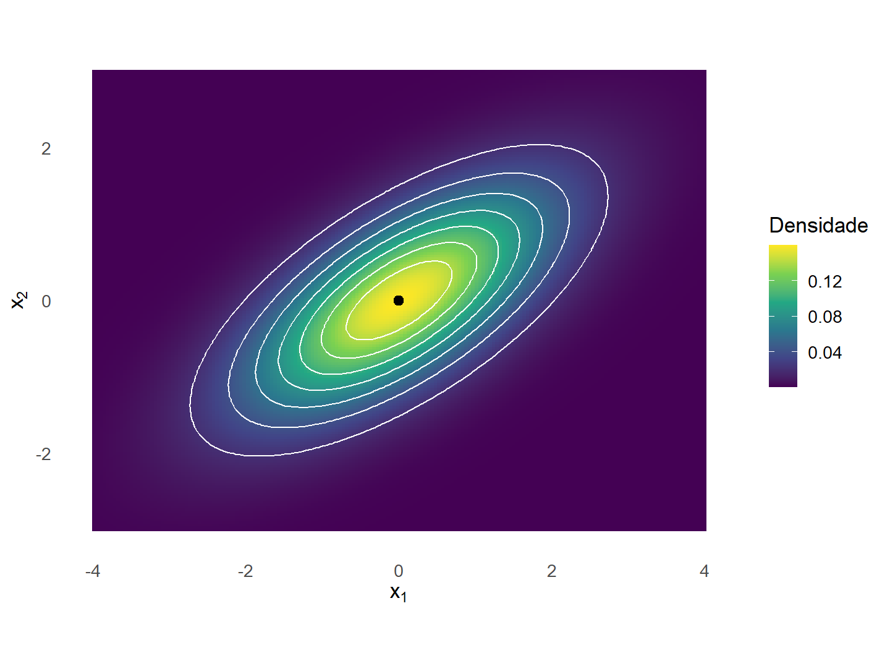
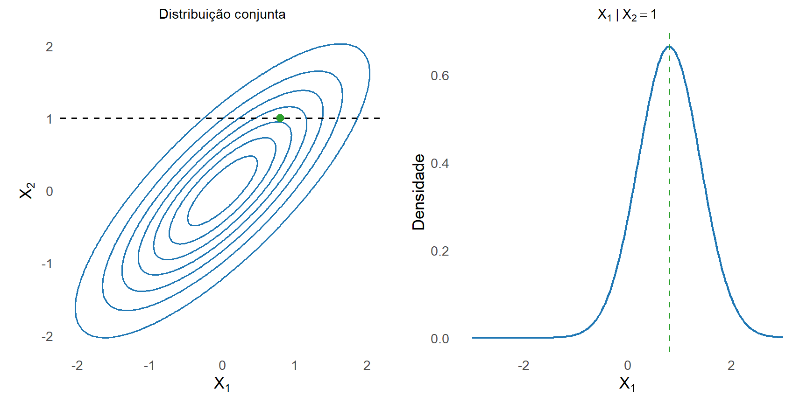
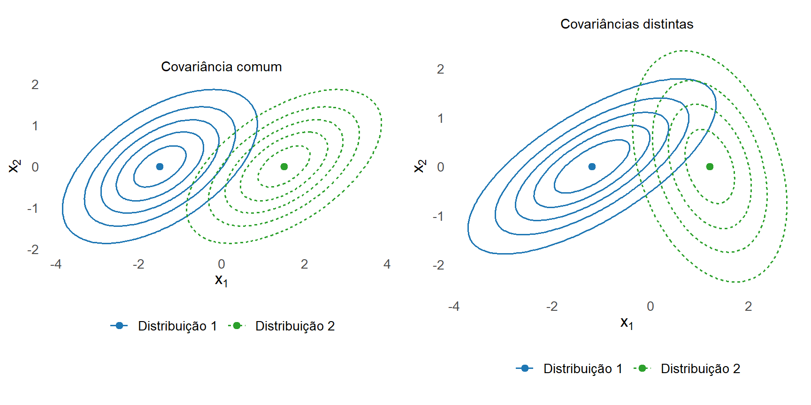

9 Distribuição Normal Multivariada
O Capítulo 8 desenvolveu o vetor de médias em Equação 8.1, a matriz de covariâncias em Definição 8.2 e a geometria da dispersão em Equação 8.32. Em uma distribuição geral, essas estruturas de primeira e segunda ordem não determinam completamente a distribuição conjunta. Diferentes distribuições podem possuir o mesmo vetor de médias e a mesma matriz de covariâncias.
Na família normal multivariada, o vetor de médias e a matriz de covariâncias determinam a distribuição. Além disso, transformações afins e distribuições marginais permanecem normais, e a estrutura de covariâncias assume consequências probabilísticas específicas, como a equivalência entre não correlação e independência para componentes conjuntamente normais.
O objetivo deste capítulo é construir a distribuição normal multivariada e relacionar suas propriedades probabilísticas à estrutura desenvolvida no capítulo anterior. Serão considerados os casos não singular e singular, a função densidade, as distribuições marginais e condicionais, a independência entre blocos, a padronização, o branqueamento e a distribuição da distância quadrática de Mahalanobis.
9.1 Definição e construção
9.1.1 Definição por combinações lineares
Considere um vetor aleatório
\[ \boldsymbol{\mathsf X} = \begin{bmatrix} X_1\\ X_2\\ \vdots\\ X_p \end{bmatrix} \in \mathbb{R}^p, \]
com
\[ E \left( \boldsymbol{\mathsf X} \right) = \boldsymbol{\mu} \]
e
\[ \operatorname{Cov} \left( \boldsymbol{\mathsf X} \right) = \boldsymbol{\Sigma}. \]
Uma maneira de caracterizar a normalidade multivariada é examinar todas as projeções lineares do vetor. Essa caracterização inclui o caso em que alguma combinação linear possui variância zero (Eaton, 2007).
Definição 9.1 (Distribuição normal multivariada) O vetor aleatório \(\boldsymbol{\mathsf X}\in\mathbb{R}^p\) possui distribuição normal multivariada se, para todo vetor constante \(\mathbf a\in\mathbb{R}^p\), a combinação linear
\[ \mathbf a^\top \boldsymbol{\mathsf X} \]
possui distribuição normal univariada, admitindo-se o caso degenerado de variância zero.
Quando
\[ E \left( \boldsymbol{\mathsf X} \right) = \boldsymbol{\mu} \]
e
\[ \operatorname{Cov} \left( \boldsymbol{\mathsf X} \right) = \boldsymbol{\Sigma}, \]
escreve-se
\[ \boldsymbol{\mathsf X} \sim N_p \left( \boldsymbol{\mu}, \boldsymbol{\Sigma} \right). \tag{9.1}\]
Pela Proposição 8.1 do Capítulo 8, para qualquer \(\mathbf a\in\mathbb{R}^p\),
\[ E \left( \mathbf a^\top \boldsymbol{\mathsf X} \right) = \mathbf a^\top \boldsymbol{\mu} \]
e
\[ \operatorname{Var} \left( \mathbf a^\top \boldsymbol{\mathsf X} \right) = \mathbf a^\top \boldsymbol{\Sigma} \mathbf a. \]
Portanto,
\[ \mathbf a^\top \boldsymbol{\mathsf X} \sim N \left( \mathbf a^\top \boldsymbol{\mu}, \mathbf a^\top \boldsymbol{\Sigma} \mathbf a \right). \tag{9.2}\]
Se
\[ \mathbf a^\top \boldsymbol{\Sigma} \mathbf a = 0, \]
então
\[ \mathbf a^\top \boldsymbol{\mathsf X} = \mathbf a^\top \boldsymbol{\mu} \]
quase certamente.
Escolhendo \(\mathbf a=\mathbf e_j\), em que \(\mathbf e_j\) é o \(j\)-ésimo vetor da base canônica, obtém-se
\[ X_j \sim N \left( \mu_j, \sigma_{jj} \right). \]
Assim, cada componente de um vetor normal multivariado possui distribuição normal univariada.
Quando \(\|\mathbf a\|=1\), a variável \(\mathbf a^\top\boldsymbol{\mathsf X}\) representa a coordenada da projeção de \(\boldsymbol{\mathsf X}\) na direção de \(\mathbf a\). A definição estabelece que toda projeção unidimensional de um vetor normal multivariado possui distribuição normal.
9.1.2 Construção afim a partir do vetor normal padrão
A definição anterior também permite construir vetores normais multivariados a partir de variáveis normais padrão independentes.
Considere
\[ \boldsymbol{\mathsf Z} = \begin{bmatrix} Z_1\\ \vdots\\ Z_r \end{bmatrix}, \]
com
\[ Z_j \sim N(0,1), \qquad j=1,\ldots,r, \]
e componentes mutuamente independentes.
Para qualquer \(\mathbf c\in\mathbb{R}^r\),
\[ \mathbf c^\top \boldsymbol{\mathsf Z} = \sum_{j=1}^r c_jZ_j \]
é uma variável normal. Além disso,
\[ E \left( \boldsymbol{\mathsf Z} \right) = \mathbf 0 \]
e
\[ \operatorname{Cov} \left( \boldsymbol{\mathsf Z} \right) = \mathbf I_r. \]
Logo,
\[ \boldsymbol{\mathsf Z} \sim N_r \left( \mathbf 0, \mathbf I_r \right). \]
A transformação afim definida em Definição 4.7 permite transportar essa distribuição para outros vetores de médias e outras estruturas de covariância.
Proposição 9.1 (Construção afim de um vetor normal) Se
\[ \boldsymbol{\mathsf Z} \sim N_r \left( \mathbf 0, \mathbf I_r \right), \]
\(\mathbf A\in\mathbb{R}^{p\times r}\) e \(\boldsymbol{\mu}\in\mathbb{R}^p\), então o vetor
\[ \boldsymbol{\mathsf X} = \boldsymbol{\mu} + \mathbf A \boldsymbol{\mathsf Z} \tag{9.3}\]
satisfaz
\[ \boldsymbol{\mathsf X} \sim N_p \left( \boldsymbol{\mu}, \mathbf A\mathbf A^\top \right). \tag{9.4}\]
Comprovação. Pelo resultado de transformação da covariância em Proposição 8.6,
\[ E \left( \boldsymbol{\mathsf X} \right) = \boldsymbol{\mu} \]
e
\[ \operatorname{Cov} \left( \boldsymbol{\mathsf X} \right) = \mathbf A \operatorname{Cov} \left( \boldsymbol{\mathsf Z} \right) \mathbf A^\top = \mathbf A \mathbf A^\top. \tag{9.5}\]
Para qualquer \(\mathbf a\in\mathbb{R}^p\),
\[ \begin{aligned} \mathbf a^\top \boldsymbol{\mathsf X} &= \mathbf a^\top \boldsymbol{\mu} + \mathbf a^\top \mathbf A \boldsymbol{\mathsf Z}\\ &= \mathbf a^\top \boldsymbol{\mu} + \left( \mathbf A^\top \mathbf a \right)^\top \boldsymbol{\mathsf Z}. \end{aligned} \]
A última parcela é uma combinação linear das componentes de \(\boldsymbol{\mathsf Z}\) e, portanto, possui distribuição normal. Assim, \(\mathbf a^\top\boldsymbol{\mathsf X}\) é normal para todo \(\mathbf a\), o que caracteriza \(\boldsymbol{\mathsf X}\) como normal multivariado.
A matriz \(\mathbf A\) determina como as componentes independentes de \(\boldsymbol{\mathsf Z}\) são combinadas. A transformação pode introduzir covariâncias entre as componentes de \(\boldsymbol{\mathsf X}\), mesmo que as componentes do vetor inicial sejam independentes.
Pela Proposição 8.2, uma matriz de covariâncias é simétrica e positiva semidefinida. Reciprocamente, toda matriz real simétrica e positiva semidefinida admite uma fatoração
\[ \boldsymbol{\Sigma} = \mathbf A \mathbf A^\top. \tag{9.6}\]
De fato, pelo Teorema 5.4,
\[ \boldsymbol{\Sigma} = \mathbf Q \boldsymbol{\Lambda} \mathbf Q^\top, \]
com autovalores não negativos. Definindo
\[ \mathbf A = \mathbf Q \boldsymbol{\Lambda}^{1/2}, \]
obtém-se
\[ \mathbf A \mathbf A^\top = \boldsymbol{\Sigma}. \]
Consequentemente, qualquer vetor \(\boldsymbol{\mu}\in\mathbb{R}^p\) e qualquer matriz simétrica positiva semidefinida \(\boldsymbol{\Sigma}\) podem parametrizar uma distribuição normal multivariada.
No Capítulo 8, a Proposição 8.2 estabeleceu que simetria e semidefinição positiva caracterizam as matrizes que podem ocorrer como matrizes de covariâncias. Na família normal multivariada, qualquer matriz com essa estrutura pode ser utilizada na construção de uma distribuição por meio de uma fatoração \(\boldsymbol{\Sigma}=\mathbf A\mathbf A^\top\).
Quando
\[ \boldsymbol{\Sigma} \succ \mathbf 0, \]
a raiz quadrada principal definida em Definição 5.9 é invertível e pode ser utilizada como matriz da construção afim, pois
\[ \boldsymbol{\Sigma}^{1/2} \boldsymbol{\Sigma}^{1/2} = \boldsymbol{\Sigma}. \]
Assim, se
\[ \boldsymbol{\mathsf Z} \sim N_p \left( \mathbf 0, \mathbf I_p \right), \]
o vetor
\[ \boldsymbol{\mathsf Y} = \boldsymbol{\mu} + \boldsymbol{\Sigma}^{1/2} \boldsymbol{\mathsf Z} \]
possui distribuição
\[ \boldsymbol{\mathsf Y} \sim N_p \left( \boldsymbol{\mu}, \boldsymbol{\Sigma} \right). \]
9.1.3 Determinação pelos parâmetros
Em distribuições gerais, conhecer \(\boldsymbol{\mu}\) e \(\boldsymbol{\Sigma}\) não determina a distribuição conjunta. A família normal apresenta uma propriedade mais forte porque todas as suas projeções lineares são normais e os parâmetros dessas projeções são determinados por \(\boldsymbol{\mu}\) e \(\boldsymbol{\Sigma}\).
Nesta seção será utilizada a notação de igualdade em distribuição. Para vetores aleatórios \(\boldsymbol{\mathsf X}\) e \(\boldsymbol{\mathsf Y}\) em \(\mathbb R^p\), escrever
\[ \boldsymbol{\mathsf X} \overset{d}{=} \boldsymbol{\mathsf Y} \]
significa que os dois vetores possuem a mesma distribuição conjunta. Equivalentemente, para todo
\[ \mathbf x = (x_1,\ldots,x_p)^\top \in \mathbb R^p, \]
tem-se
\[ P \left( X_1\leq x_1,\ldots,X_p\leq x_p \right) = P \left( Y_1\leq x_1,\ldots,Y_p\leq x_p \right). \]
A igualdade em distribuição não significa que
\[ \boldsymbol{\mathsf X} = \boldsymbol{\mathsf Y} \]
quase certamente. Os vetores podem, inclusive, estar definidos em espaços de probabilidade distintos.
O resultado geral que permite passar das distribuições das projeções à distribuição conjunta é o Teorema de Cramér–Wold (Eaton, 2007).
Teorema 9.1 (Teorema de Cramér–Wold) Sejam \(\boldsymbol{\mathsf X}\) e \(\boldsymbol{\mathsf Y}\) vetores aleatórios em \(\mathbb{R}^p\). Então,
\[ \boldsymbol{\mathsf X} \overset{d}{=} \boldsymbol{\mathsf Y} \]
se, e somente se,
\[ \mathbf a^\top \boldsymbol{\mathsf X} \overset{d}{=} \mathbf a^\top \boldsymbol{\mathsf Y} \]
para todo \(\mathbf a\in\mathbb{R}^p\).
A implicação direta decorre da aplicação da mesma transformação linear a vetores com a mesma distribuição. A implicação inversa estabelece que a coleção das distribuições de todas as projeções lineares determina a distribuição conjunta.
Proposição 9.2 (Determinação da distribuição normal pelos parâmetros) Se
\[ \boldsymbol{\mathsf X} \sim N_p \left( \boldsymbol{\mu}, \boldsymbol{\Sigma} \right) \]
e
\[ \boldsymbol{\mathsf Y} \sim N_p \left( \boldsymbol{\mu}, \boldsymbol{\Sigma} \right), \]
então
\[ \boldsymbol{\mathsf X} \overset{d}{=} \boldsymbol{\mathsf Y}. \]
Comprovação. Para qualquer \(\mathbf a\in\mathbb{R}^p\),
\[ \mathbf a^\top \boldsymbol{\mathsf X} \sim N \left( \mathbf a^\top \boldsymbol{\mu}, \mathbf a^\top \boldsymbol{\Sigma} \mathbf a \right) \]
e
\[ \mathbf a^\top \boldsymbol{\mathsf Y} \sim N \left( \mathbf a^\top \boldsymbol{\mu}, \mathbf a^\top \boldsymbol{\Sigma} \mathbf a \right). \]
Logo,
\[ \mathbf a^\top \boldsymbol{\mathsf X} \overset{d}{=} \mathbf a^\top \boldsymbol{\mathsf Y} \]
para todo \(\mathbf a\). Pelo Teorema 9.1,
\[ \boldsymbol{\mathsf X} \overset{d}{=} \boldsymbol{\mathsf Y}. \]
Essa propriedade explica por que a notação
\[ N_p \left( \boldsymbol{\mu}, \boldsymbol{\Sigma} \right) \]
é suficiente para identificar uma distribuição normal multivariada.
Como consequência, quando
\[ \boldsymbol{\Sigma} \succ \mathbf 0 \]
e
\[ \boldsymbol{\mathsf X} \sim N_p \left( \boldsymbol{\mu}, \boldsymbol{\Sigma} \right), \]
a construção anterior permite escrever
\[ \boldsymbol{\mathsf X} \overset{d}{=} \boldsymbol{\mu} + \boldsymbol{\Sigma}^{1/2} \boldsymbol{\mathsf Z}, \qquad \boldsymbol{\mathsf Z} \sim N_p \left( \mathbf 0, \mathbf I_p \right). \tag{9.7}\]
9.1.4 Aprofundamento: caso singular e suporte efetivo
Definição 9.2 (Distribuição normal multivariada singular) Uma distribuição
\[ N_p \left( \boldsymbol{\mu}, \boldsymbol{\Sigma} \right) \]
é denominada singular ou degenerada quando
\[ \operatorname{posto} \left( \boldsymbol{\Sigma} \right) = r < p. \]
Quando
\[ \operatorname{posto} \left( \boldsymbol{\Sigma} \right) = p, \]
a distribuição é denominada não singular.
Se
\[ \operatorname{posto} \left( \boldsymbol{\Sigma} \right) = r < p, \]
a decomposição espectral reduzida pode ser escrita como
\[ \boldsymbol{\Sigma} = \mathbf Q_r \boldsymbol{\Lambda}_r \mathbf Q_r^\top, \]
em que
\[ \mathbf Q_r \in \mathbb{R}^{p\times r} \]
possui colunas ortonormais associadas aos autovalores positivos e
\[ \boldsymbol{\Lambda}_r = \operatorname{diag} \left( \lambda_1,\ldots,\lambda_r \right), \qquad \lambda_j>0. \]
Definindo
\[ \mathbf A_r = \mathbf Q_r \boldsymbol{\Lambda}_r^{1/2}, \]
tem-se
\[ \boldsymbol{\Sigma} = \mathbf A_r \mathbf A_r^\top. \]
Logo, uma representação da distribuição singular é
\[ \boldsymbol{\mathsf X} \overset{d}{=} \boldsymbol{\mu} + \mathbf A_r \boldsymbol{\mathsf Z}, \qquad \boldsymbol{\mathsf Z} \sim N_r \left( \mathbf 0, \mathbf I_r \right). \tag{9.8}\]
No Capítulo 8, a partir da Proposição 8.3, vimos que a singularidade de \(\boldsymbol{\Sigma}\) implica, para qualquer vetor aleatório com essa matriz de covariâncias,
\[ \boldsymbol{\mathsf X} - \boldsymbol{\mu} \in \mathcal C \left( \boldsymbol{\Sigma} \right) \]
quase certamente. Na família normal, a representação em Equação 9.8 permite uma conclusão mais forte: o subespaço afim
\[ \boldsymbol{\mu} + \mathcal C \left( \boldsymbol{\Sigma} \right) \]
constitui o suporte da distribuição.
Proposição 9.3 (Suporte efetivo da normal singular) Se
\[ \boldsymbol{\mathsf X} \sim N_p \left( \boldsymbol{\mu}, \boldsymbol{\Sigma} \right) \]
e
\[ \operatorname{posto} \left( \boldsymbol{\Sigma} \right) = r < p, \]
então
\[ P \left[ \boldsymbol{\mathsf X} \in \boldsymbol{\mu} + \mathcal C \left( \boldsymbol{\Sigma} \right) \right] = 1. \tag{9.9}\]
O suporte da distribuição é o subespaço afim
\[ \boldsymbol{\mu} + \mathcal C \left( \boldsymbol{\Sigma} \right), \]
de dimensão \(r\).
Comprovação. Pela representação Equação 9.8,
\[ \boldsymbol{\mathsf X} \overset{d}{=} \boldsymbol{\mu} + \mathbf A_r \boldsymbol{\mathsf Z}. \]
Como \(\boldsymbol{\Lambda}_r^{1/2}\) é invertível,
\[ \mathcal C \left( \mathbf A_r \right) = \mathcal C \left( \mathbf Q_r \right) = \mathcal C \left( \boldsymbol{\Sigma} \right). \]
Portanto,
\[ \mathbf A_r \boldsymbol{\mathsf Z} \in \mathcal C \left( \boldsymbol{\Sigma} \right) \]
quase certamente, o que fornece Equação 9.9.
Além disso, \(\mathbf A_r\) possui posto coluna \(r\). A aplicação
\[ \mathbf z \longmapsto \boldsymbol{\mu} + \mathbf A_r\mathbf z \]
é uma transformação afim bijetiva entre \(\mathbb{R}^r\) e
\[ \boldsymbol{\mu} + \mathcal C \left( \boldsymbol{\Sigma} \right). \]
Como a normal padrão em \(\mathbb{R}^r\) possui densidade positiva em todo \(\mathbb{R}^r\), todo conjunto relativamente aberto e não vazio desse subespaço afim possui probabilidade positiva. Assim, esse subespaço é o suporte da distribuição.
A mesma estrutura pode ser caracterizada pelo núcleo da matriz de covariâncias. Se
\[ \mathbf a \in \mathcal N \left( \boldsymbol{\Sigma} \right), \]
então
\[ \operatorname{Var} \left[ \mathbf a^\top \left( \boldsymbol{\mathsf X} - \boldsymbol{\mu} \right) \right] = \mathbf a^\top \boldsymbol{\Sigma} \mathbf a = 0, \]
e, consequentemente,
\[ \mathbf a^\top \left( \boldsymbol{\mathsf X} - \boldsymbol{\mu} \right) = 0 \]
quase certamente.
As direções do núcleo são, portanto, direções sem variabilidade probabilística.
A normal singular não possui densidade em relação à medida de Lebesgue de dimensão \(p\) em \(\mathbb{R}^p\), pois concentra toda a probabilidade em um conjunto de dimensão \(r<p\). No suporte afim de dimensão \(r\), entretanto, a distribuição pode ser descrita por uma densidade relativamente à medida de volume \(r\)-dimensional desse subespaço.
Exemplo 9.1 (Normal bivariada concentrada em uma reta) Considere
\[ Z \sim N(0,1) \]
e defina
\[ \boldsymbol{\mathsf X} = \begin{bmatrix} X_1\\ X_2 \end{bmatrix} = \begin{bmatrix} Z\\ 2Z \end{bmatrix}. \]
Equivalentemente,
\[ \boldsymbol{\mathsf X} = \begin{bmatrix} 1\\ 2 \end{bmatrix} Z. \]
Logo,
\[ \boldsymbol{\mathsf X} \sim N_2 \left( \begin{bmatrix} 0\\ 0 \end{bmatrix}, \begin{bmatrix} 1 & 2\\ 2 & 4 \end{bmatrix} \right). \]
A matriz de covariâncias possui posto 1 e
\[ X_2 = 2X_1 \]
quase certamente. Portanto, toda a distribuição está concentrada na reta
\[ x_2 = 2x_1. \]
Embora o vetor tenha duas componentes, sua dimensão probabilística efetiva é 1.
O caso singular mostra que a normal multivariada pode existir mesmo sem possuir densidade no espaço ambiente \(\mathbb{R}^p\). Quando
\[ \boldsymbol{\Sigma} \succ \mathbf 0, \]
essa restrição desaparece: a matriz possui posto \(p\), é invertível e a distribuição ocupa todo o espaço \(\mathbb{R}^p\).
9.2 Densidade no caso não singular
A partir deste ponto, considere
\[ \boldsymbol{\Sigma} \succ \mathbf 0. \]
Então,
\[ \boldsymbol{\Sigma}^{-1} \]
existe e
\[ \det \left( \boldsymbol{\Sigma} \right) > 0, \]
permitindo representar a distribuição normal multivariada por uma densidade em relação à medida de Lebesgue em \(\mathbb{R}^p\).
9.2.1 Função densidade e log-densidade
Proposição 9.4 (Densidade da normal multivariada não singular) Se
\[ \boldsymbol{\mathsf X} \sim N_p \left( \boldsymbol{\mu}, \boldsymbol{\Sigma} \right), \]
com
\[ \boldsymbol{\Sigma} \succ \mathbf 0, \]
então \(\boldsymbol{\mathsf X}\) possui densidade
\[ f_{\boldsymbol{\mathsf X}} \left( \mathbf x \right) = \frac{ 1 }{ (2\pi)^{p/2} \det \left( \boldsymbol{\Sigma} \right)^{1/2} } \exp \left\{ -\frac{1}{2} \left( \mathbf x-\boldsymbol{\mu} \right)^\top \boldsymbol{\Sigma}^{-1} \left( \mathbf x-\boldsymbol{\mu} \right) \right\}, \tag{9.10}\]
para todo \(\mathbf x\in\mathbb{R}^p\).
Comprovação. Pela representação Equação 9.7,
\[ \boldsymbol{\mathsf X} \overset{d}{=} \boldsymbol{\mu} + \boldsymbol{\Sigma}^{1/2} \boldsymbol{\mathsf Z}, \]
com
\[ \boldsymbol{\mathsf Z} \sim N_p \left( \mathbf 0, \mathbf I_p \right). \]
Como as componentes de \(\boldsymbol{\mathsf Z}\) são normais padrão independentes, sua densidade conjunta é
\[ f_{\boldsymbol{\mathsf Z}} \left( \mathbf z \right) = \frac{1}{(2\pi)^{p/2}} \exp \left( -\frac12 \mathbf z^\top \mathbf z \right). \]
Considere a transformação afim
\[ \mathbf x = \boldsymbol{\mu} + \boldsymbol{\Sigma}^{1/2} \mathbf z. \]
Como \(\boldsymbol{\Sigma}^{1/2}\) é invertível,
\[ \mathbf z = \boldsymbol{\Sigma}^{-1/2} \left( \mathbf x-\boldsymbol{\mu} \right). \]
A Jacobiana da transformação inversa é a matriz constante \(\boldsymbol{\Sigma}^{-1/2}\), de modo que
\[ \left| \det \left( \boldsymbol{\Sigma}^{-1/2} \right) \right| = \det \left( \boldsymbol{\Sigma} \right)^{-1/2}. \]
Aplicando a transformação de densidades estabelecida em Proposição 7.19,
\[ \begin{aligned} f_{\boldsymbol{\mathsf X}} \left( \mathbf x \right) &= f_{\boldsymbol{\mathsf Z}} \left[ \boldsymbol{\Sigma}^{-1/2} \left( \mathbf x-\boldsymbol{\mu} \right) \right] \det \left( \boldsymbol{\Sigma} \right)^{-1/2}\\ &= \frac{ 1 }{ (2\pi)^{p/2} \det \left( \boldsymbol{\Sigma} \right)^{1/2} } \exp \left\{ -\frac12 \left( \mathbf x-\boldsymbol{\mu} \right)^\top \boldsymbol{\Sigma}^{-1} \left( \mathbf x-\boldsymbol{\mu} \right) \right\}. \end{aligned} \]
A derivação mostra a função desempenhada pelos dois termos matriciais da densidade. O determinante surge da alteração de volume provocada pela transformação afim, enquanto a matriz inversa aparece ao expressar o afastamento de \(\mathbf x\) nas coordenadas da normal padrão obtidas pelo branqueamento.
Como a distribuição é contínua,
\[ P \left( \boldsymbol{\mathsf X} = \mathbf x \right) = 0 \]
para qualquer ponto fixo \(\mathbf x\in\mathbb{R}^p\). Probabilidades são atribuídas a regiões:
\[ P \left( \boldsymbol{\mathsf X} \in \mathcal A \right) = \int_{\mathcal A} f_{\boldsymbol{\mathsf X}} \left( \mathbf x \right) \,d\mathbf x, \tag{9.11}\]
para conjuntos mensuráveis \(\mathcal A\subseteq\mathbb{R}^p\).
A forma quadrática no expoente é a distância quadrática de Mahalanobis definida em Definição 8.9:
\[ d_M^2 \left( \mathbf x, \boldsymbol{\mu} \right) = \left( \mathbf x-\boldsymbol{\mu} \right)^\top \boldsymbol{\Sigma}^{-1} \left( \mathbf x-\boldsymbol{\mu} \right). \]
Assim,
\[ f_{\boldsymbol{\mathsf X}} \left( \mathbf x \right) = \frac{ 1 }{ (2\pi)^{p/2} \det \left( \boldsymbol{\Sigma} \right)^{1/2} } \exp \left[ -\frac12 d_M^2 \left( \mathbf x, \boldsymbol{\mu} \right) \right]. \tag{9.12}\]
Para \(\boldsymbol{\mu}\) e \(\boldsymbol{\Sigma}\) fixos, a posição de \(\mathbf x\) afeta a densidade somente por meio de sua distância de Mahalanobis ao vetor de médias. Como
\[ c \longmapsto \exp \left( -\frac c2 \right) \]
é estritamente decrescente para \(c\geq0\), pontos mais afastados do centro segundo essa métrica possuem menor densidade.
A log-densidade é
\[ \begin{aligned} \log f_{\boldsymbol{\mathsf X}} \left( \mathbf x \right) &= -\frac p2 \log(2\pi) - \frac12 \log \det \left( \boldsymbol{\Sigma} \right)\\ &\quad - \frac12 \left( \mathbf x-\boldsymbol{\mu} \right)^\top \boldsymbol{\Sigma}^{-1} \left( \mathbf x-\boldsymbol{\mu} \right). \end{aligned} \tag{9.13}\]
A expressão reúne uma constante dependente da dimensão, um termo associado à escala volumétrica da dispersão e um termo associado ao afastamento do ponto em relação ao centro. No Capítulo 10, essa mesma estrutura aparecerá na função de verossimilhança de uma amostra normal multivariada.
Quando \(p=1\),
\[ \boldsymbol{\Sigma} = \begin{bmatrix} \sigma^2 \end{bmatrix}, \]
e Equação 9.10 reduz-se a
\[ f_X(x) = \frac{1}{\sqrt{2\pi}\sigma} \exp \left[ -\frac{(x-\mu)^2}{2\sigma^2} \right]. \]
O vetor \(\boldsymbol{\mu}\) determina a localização da distribuição. Como
\[ d_M^2 \left( \mathbf x, \boldsymbol{\mu} \right) \geq 0 \]
e a igualdade ocorre em \(\mathbf x=\boldsymbol{\mu}\), a densidade atinge seu máximo no centro:
\[ f_{\boldsymbol{\mathsf X}} \left( \boldsymbol{\mu} \right) = \frac{ 1 }{ (2\pi)^{p/2} \det \left( \boldsymbol{\Sigma} \right)^{1/2} }. \tag{9.14}\]
A matriz \(\boldsymbol{\Sigma}\) determina a escala, a orientação e a forma das superfícies de igual densidade. A geometria desses elipsoides foi desenvolvida no Capítulo 8 em Equação 8.32; a novidade probabilística é que, na distribuição normal, essa mesma geometria organiza os valores da densidade.
9.2.2 Superfícies de igual densidade
Para \(c>0\), considere
\[ \mathcal S_c = \left\{ \mathbf x\in\mathbb{R}^p: d_M^2 \left( \mathbf x, \boldsymbol{\mu} \right) = c \right\}. \tag{9.15}\]
Para todo \(\mathbf x\in\mathcal S_c\),
\[ f_{\boldsymbol{\mathsf X}} \left( \mathbf x \right) = \frac{ 1 }{ (2\pi)^{p/2} \det \left( \boldsymbol{\Sigma} \right)^{1/2} } \exp \left( -\frac c2 \right). \]
Portanto, \(\mathcal S_c\) é uma superfície de igual densidade.
Pela representação espectral em Equação 8.33, desenvolvida no Capítulo 8, essas superfícies são elipsoidais. Seus eixos e extensões são determinados pela estrutura espectral de \(\boldsymbol{\Sigma}\). Não é necessário reconstruir aqui essa geometria; no modelo normal, o novo resultado é a correspondência
\[ \text{distância de Mahalanobis constante} \quad\Longleftrightarrow\quad \text{densidade constante}. \]
A Figura Figura 9.1 mostra essa correspondência para uma distribuição normal bivariada.
As curvas de nível são elipses centradas em \(\boldsymbol{\mu}\). Todos os pontos sobre uma mesma curva apresentam a mesma distância de Mahalanobis ao centro e, consequentemente, a mesma densidade.
A região interna correspondente é
\[ \mathcal E_c = \left\{ \mathbf x\in\mathbb{R}^p: d_M^2 \left( \mathbf x, \boldsymbol{\mu} \right) \leq c \right\}. \tag{9.16}\]
Neste ponto, \(c\) é apenas uma constante positiva. Mais adiante, a distribuição de \(D_M^2\) permitirá escolher valores de \(c\) associados a probabilidades populacionais específicas.
9.3 Transformações e distribuições marginais
A construção em Proposição 9.1 partiu de um vetor normal padrão. Uma propriedade mais geral da família normal é o fechamento sob transformações afins. Essa propriedade permite obter distribuições de combinações lineares, projeções, subvectores e transformações de padronização sem recalcular densidades por integração.
9.3.1 Fechamento sob transformações afins
Considere
\[ \boldsymbol{\mathsf X} \sim N_p \left( \boldsymbol{\mu}, \boldsymbol{\Sigma} \right), \]
\(\mathbf A\in\mathbb{R}^{m\times p}\) e \(\mathbf b\in\mathbb{R}^m\).
Proposição 9.5 (Fechamento da família normal sob transformações afins) Se
\[ \boldsymbol{\mathsf Y} = \mathbf A \boldsymbol{\mathsf X} + \mathbf b, \tag{9.17}\]
então
\[ \boldsymbol{\mathsf Y} \sim N_m \left( \mathbf A \boldsymbol{\mu} + \mathbf b, \mathbf A \boldsymbol{\Sigma} \mathbf A^\top \right). \tag{9.18}\]
Comprovação. Pela Proposição 8.6,
\[ E \left( \boldsymbol{\mathsf Y} \right) = \mathbf A \boldsymbol{\mu} + \mathbf b \]
e
\[ \operatorname{Cov} \left( \boldsymbol{\mathsf Y} \right) = \mathbf A \boldsymbol{\Sigma} \mathbf A^\top. \]
Para qualquer \(\mathbf c\in\mathbb{R}^m\),
\[ \begin{aligned} \mathbf c^\top \boldsymbol{\mathsf Y} &= \mathbf c^\top \left( \mathbf A \boldsymbol{\mathsf X} + \mathbf b \right)\\ &= \left( \mathbf A^\top \mathbf c \right)^\top \boldsymbol{\mathsf X} + \mathbf c^\top \mathbf b. \end{aligned} \]
Como \(\boldsymbol{\mathsf X}\) é normal multivariado,
\[ \left( \mathbf A^\top \mathbf c \right)^\top \boldsymbol{\mathsf X} \]
é normal. A adição de uma constante preserva a normalidade. Portanto, toda combinação linear das componentes de \(\boldsymbol{\mathsf Y}\) é normal, o que demonstra o resultado.
As fórmulas para média e covariância são válidas para vetores aleatórios gerais com segundos momentos finitos. O resultado específico da família normal é o fechamento distribucional:
\[ \boldsymbol{\mathsf X} \text{ normal multivariado} \quad\Longrightarrow\quad \mathbf A\boldsymbol{\mathsf X}+\mathbf b \text{ normal multivariado}. \]
A matriz \(\mathbf A\) não precisa possuir posto completo. Se
\[ \operatorname{posto} \left( \mathbf A \boldsymbol{\Sigma} \mathbf A^\top \right) < m, \]
a distribuição transformada é uma normal singular em \(\mathbb{R}^m\).
Exemplo 9.2 (Transformação de um vetor normal bivariado) Considere
\[ \boldsymbol{\mathsf X} = \begin{bmatrix} X_1\\ X_2 \end{bmatrix} \sim N_2 \left( \begin{bmatrix} 2\\ 1 \end{bmatrix}, \begin{bmatrix} 4 & 1\\ 1 & 2 \end{bmatrix} \right). \]
Defina
\[ \boldsymbol{\mathsf Y} = \begin{bmatrix} Y_1\\ Y_2 \end{bmatrix} = \begin{bmatrix} 1 & 1\\ 1 & -1 \end{bmatrix} \boldsymbol{\mathsf X} + \begin{bmatrix} 0\\ 3 \end{bmatrix}. \]
Logo,
\[ Y_1 = X_1+X_2 \]
e
\[ Y_2 = X_1-X_2+3. \]
O vetor de médias é
\[ \begin{aligned} E \left( \boldsymbol{\mathsf Y} \right) &= \begin{bmatrix} 1 & 1\\ 1 & -1 \end{bmatrix} \begin{bmatrix} 2\\ 1 \end{bmatrix} + \begin{bmatrix} 0\\ 3 \end{bmatrix}\\ &= \begin{bmatrix} 3\\ 4 \end{bmatrix}, \end{aligned} \]
e a matriz de covariâncias é
\[ \begin{aligned} \operatorname{Cov} \left( \boldsymbol{\mathsf Y} \right) &= \begin{bmatrix} 1 & 1\\ 1 & -1 \end{bmatrix} \begin{bmatrix} 4 & 1\\ 1 & 2 \end{bmatrix} \begin{bmatrix} 1 & 1\\ 1 & -1 \end{bmatrix}\\ &= \begin{bmatrix} 8 & 2\\ 2 & 4 \end{bmatrix}. \end{aligned} \]
Portanto,
\[ \boldsymbol{\mathsf Y} \sim N_2 \left( \begin{bmatrix} 3\\ 4 \end{bmatrix}, \begin{bmatrix} 8 & 2\\ 2 & 4 \end{bmatrix} \right). \]
O exemplo mostra que uma transformação afim modifica simultaneamente localização e covariância, mas preserva a família normal.
9.3.2 Combinações lineares
Uma combinação linear é o caso \(m=1\) de Proposição 9.5.
Para \(\mathbf a\in\mathbb{R}^p\) e \(b\in\mathbb{R}\),
\[ Y = \mathbf a^\top \boldsymbol{\mathsf X} + b \]
satisfaz
\[ Y \sim N \left( \mathbf a^\top \boldsymbol{\mu} + b, \mathbf a^\top \boldsymbol{\Sigma} \mathbf a \right). \tag{9.19}\]
A expressão fornece diretamente a distribuição de somas, diferenças, contrastes, médias ponderadas e projeções lineares.
Exemplo 9.3 (Soma e diferença de componentes conjuntamente normais) Considere
\[ \begin{bmatrix} X_1\\ X_2 \end{bmatrix} \sim N_2 \left( \begin{bmatrix} \mu_1\\ \mu_2 \end{bmatrix}, \begin{bmatrix} \sigma_1^2 & \sigma_{12}\\ \sigma_{12} & \sigma_2^2 \end{bmatrix} \right). \]
Para
\[ Y_1 = X_1+X_2, \]
tem-se
\[ Y_1 \sim N \left( \mu_1+\mu_2, \sigma_1^2 + \sigma_2^2 + 2\sigma_{12} \right). \]
Para
\[ Y_2 = X_1-X_2, \]
tem-se
\[ Y_2 \sim N \left( \mu_1-\mu_2, \sigma_1^2 + \sigma_2^2 - 2\sigma_{12} \right). \]
Quando \(\sigma_{12}>0\), a covariância aumenta a variância da soma e reduz a variância da diferença. Para \(\sigma_{12}<0\), ocorre o efeito inverso.
Se
\[ \mathbf a^\top \boldsymbol{\Sigma} \mathbf a = 0, \]
a distribuição é degenerada e
\[ \mathbf a^\top \boldsymbol{\mathsf X} + b = \mathbf a^\top \boldsymbol{\mu} + b \]
quase certamente.
9.3.3 Distribuições marginais
As distribuições marginais de subvectores também podem ser obtidas como transformações lineares.
Considere
\[ \boldsymbol{\mathsf X} = \begin{bmatrix} \boldsymbol{\mathsf X}_1\\ \boldsymbol{\mathsf X}_2 \end{bmatrix} \sim N_p \left( \begin{bmatrix} \boldsymbol{\mu}_1\\ \boldsymbol{\mu}_2 \end{bmatrix}, \begin{bmatrix} \boldsymbol{\Sigma}_{11} & \boldsymbol{\Sigma}_{12}\\ \boldsymbol{\Sigma}_{21} & \boldsymbol{\Sigma}_{22} \end{bmatrix} \right), \tag{9.20}\]
em que
\[ \boldsymbol{\mathsf X}_1 \in \mathbb{R}^{p_1}, \qquad \boldsymbol{\mathsf X}_2 \in \mathbb{R}^{p_2}, \qquad p_1+p_2=p. \]
Proposição 9.6 (Distribuições marginais da normal multivariada) Sob o particionamento em Equação 9.20,
\[ \boldsymbol{\mathsf X}_1 \sim N_{p_1} \left( \boldsymbol{\mu}_1, \boldsymbol{\Sigma}_{11} \right) \tag{9.21}\]
e
\[ \boldsymbol{\mathsf X}_2 \sim N_{p_2} \left( \boldsymbol{\mu}_2, \boldsymbol{\Sigma}_{22} \right). \tag{9.22}\]
Comprovação. O primeiro bloco pode ser escrito como
\[ \boldsymbol{\mathsf X}_1 = \mathbf A_1 \boldsymbol{\mathsf X}, \]
com
\[ \mathbf A_1 = \begin{bmatrix} \mathbf I_{p_1} & \mathbf 0 \end{bmatrix}. \]
Pela Proposição 9.5,
\[ \boldsymbol{\mathsf X}_1 \sim N_{p_1} \left( \mathbf A_1\boldsymbol{\mu}, \mathbf A_1 \boldsymbol{\Sigma} \mathbf A_1^\top \right). \]
A estrutura particionada fornece
\[ \mathbf A_1 \boldsymbol{\mu} = \boldsymbol{\mu}_1 \]
e
\[ \mathbf A_1 \boldsymbol{\Sigma} \mathbf A_1^\top = \boldsymbol{\Sigma}_{11}. \]
O segundo bloco é obtido de forma análoga.
A distribuição marginal de um bloco depende de seu vetor de médias e de sua própria matriz de covariâncias. A matriz \(\boldsymbol{\Sigma}_{12}\) não aparece nos parâmetros marginais, mas participa da estrutura de dependência conjunta.
Exemplo 9.4 (Marginal de um vetor normal trivariado) Considere
\[ \boldsymbol{\mathsf X} = \begin{bmatrix} X_1\\ X_2\\ X_3 \end{bmatrix} \sim N_3 \left( \begin{bmatrix} 1\\ 2\\ 0 \end{bmatrix}, \begin{bmatrix} 4 & 1 & -1\\ 1 & 3 & 0,5\\ -1 & 0,5 & 2 \end{bmatrix} \right). \]
Selecionando \(X_1\) e \(X_3\),
\[ \begin{bmatrix} X_1\\ X_3 \end{bmatrix} \sim N_2 \left( \begin{bmatrix} 1\\ 0 \end{bmatrix}, \begin{bmatrix} 4 & -1\\ -1 & 2 \end{bmatrix} \right). \]
A média marginal é formada pelas componentes correspondentes de \(\boldsymbol{\mu}\), e a matriz de covariâncias marginal é a submatriz principal associada às variáveis selecionadas.
As distribuições marginais continuam normais quando a distribuição conjunta é singular. O subvetor selecionado pode possuir matriz de covariâncias não singular ou singular.
9.3.4 Padronização marginal e branqueamento
O Capítulo 8 definiu em Equação 8.20 a matriz
\[ \mathbf D_{\Sigma} = \operatorname{diag} \left( \sigma_{11},\ldots,\sigma_{pp} \right). \]
Suponha
\[ \sigma_{jj}>0, \qquad j=1,\ldots,p. \]
A padronização marginal é
\[ \boldsymbol{\mathsf Z}_{\mathrm{pad}} = \mathbf D_{\Sigma}^{-1/2} \left( \boldsymbol{\mathsf X} - \boldsymbol{\mu} \right). \tag{9.23}\]
Pela Proposição 9.5 e pela definição de \(\boldsymbol{\mathcal R}\) em Definição 8.5,
\[ \boldsymbol{\mathsf Z}_{\mathrm{pad}} \sim N_p \left( \mathbf 0, \boldsymbol{\mathcal R} \right), \tag{9.24}\]
com
\[ \boldsymbol{\mathcal R} = \mathbf D_{\Sigma}^{-1/2} \boldsymbol{\Sigma} \mathbf D_{\Sigma}^{-1/2}. \]
Cada componente padronizada satisfaz
\[ Z_{\mathrm{pad},j} \sim N(0,1), \]
mas as componentes não são necessariamente independentes.
Quando
\[ \boldsymbol{\Sigma} \succ \mathbf 0, \]
o Capítulo 8 mostrou em Equação 8.51 que o branqueamento simétrico transforma a estrutura de segunda ordem em covariância identidade. Sob normalidade multivariada, é possível determinar também a distribuição completa do vetor transformado.
O branqueamento simétrico é dado por
\[ \boldsymbol{\mathsf Z} = \boldsymbol{\Sigma}^{-1/2} \left( \boldsymbol{\mathsf X} - \boldsymbol{\mu} \right). \tag{9.25}\]
Pelo fechamento da família normal,
\[ \begin{aligned} \boldsymbol{\mathsf Z} &\sim N_p \left( \mathbf 0, \boldsymbol{\Sigma}^{-1/2} \boldsymbol{\Sigma} \boldsymbol{\Sigma}^{-1/2} \right)\\ &= N_p \left( \mathbf 0, \mathbf I_p \right). \end{aligned} \tag{9.26}\]
A diferença entre as duas transformações é, portanto,
\[ \mathbf D_{\Sigma}^{-1/2} \left( \boldsymbol{\mathsf X} - \boldsymbol{\mu} \right) \sim N_p \left( \mathbf 0, \boldsymbol{\mathcal R} \right) \]
e
\[ \boldsymbol{\Sigma}^{-1/2} \left( \boldsymbol{\mathsf X} - \boldsymbol{\mu} \right) \sim N_p \left( \mathbf 0, \mathbf I_p \right). \]
A padronização marginal transforma as variâncias em um e preserva as correlações. O branqueamento transforma toda a matriz de covariâncias em identidade.
A consequência adicional da normalidade conjunta é probabilística: como será formalizado na seção seguinte, uma matriz de covariâncias diagonal implica independência das componentes dentro de um vetor conjuntamente normal. Portanto, as componentes do vetor branqueado são independentes.
Como discutido no Capítulo 8, o branqueamento não é único. No caso normal, essa não unicidade preserva também a distribuição normal padrão. Se \(\mathbf Q_0\) é ortogonal, então
\[ \mathbf Q_0 \boldsymbol{\Sigma}^{-1/2} \left( \boldsymbol{\mathsf X} - \boldsymbol{\mu} \right) \sim N_p \left( \mathbf 0, \mathbf I_p \right), \]
pois
\[ \mathbf Q_0 \mathbf I_p \mathbf Q_0^\top = \mathbf I_p. \]
O branqueamento simétrico constitui uma escolha específica entre transformações que produzem covariância identidade.
A próxima seção utiliza uma propriedade que distingue a família normal de distribuições gerais: para blocos pertencentes ao mesmo vetor normal multivariado, covariância cruzada nula é equivalente à independência.
9.4 Independência e distribuições condicionais
Para vetores aleatórios gerais, independência implica covariância cruzada nula quando os segundos momentos existem, mas a implicação inversa não é válida em geral. Na família normal multivariada, a normalidade conjunta transforma essa relação de segunda ordem em uma caracterização de independência.
Essa propriedade permite também obter a distribuição condicional de um bloco a partir da estrutura de covariâncias. O complemento de Schur, que no Capítulo 8 apareceu em Proposição 8.5 como matriz de covariâncias de um resíduo linear ótimo, passa a representar exatamente a matriz de covariâncias condicional.
9.4.1 Independência entre blocos conjuntamente normais
Considere o vetor particionado
\[ \boldsymbol{\mathsf X} = \begin{bmatrix} \boldsymbol{\mathsf X}_1\\ \boldsymbol{\mathsf X}_2 \end{bmatrix} \sim N_p \left( \begin{bmatrix} \boldsymbol{\mu}_1\\ \boldsymbol{\mu}_2 \end{bmatrix}, \begin{bmatrix} \boldsymbol{\Sigma}_{11} & \boldsymbol{\Sigma}_{12}\\ \boldsymbol{\Sigma}_{21} & \boldsymbol{\Sigma}_{22} \end{bmatrix} \right), \tag{9.29}\]
em que
\[ \boldsymbol{\mathsf X}_1 \in \mathbb{R}^{p_1}, \qquad \boldsymbol{\mathsf X}_2 \in \mathbb{R}^{p_2}, \qquad p_1+p_2=p. \]
Se os dois blocos são independentes, então
\[ \operatorname{Cov} \left( \boldsymbol{\mathsf X}_1, \boldsymbol{\mathsf X}_2 \right) = \boldsymbol{\Sigma}_{12} = \mathbf 0. \]
Essa implicação vale para quaisquer vetores aleatórios independentes com segundos momentos finitos. A normalidade conjunta permite estabelecer também a implicação inversa.
Nesta seção, quando o símbolo \(\perp\) aparece entre vetores aleatórios, a notação
\[ \boldsymbol{\mathsf X}_1 \perp \boldsymbol{\mathsf X}_2 \]
significa que \(\boldsymbol{\mathsf X}_1\) e \(\boldsymbol{\mathsf X}_2\) são independentes. Esse uso deve ser distinguido da ortogonalidade geométrica, também representada pelo símbolo \(\perp\) nos capítulos de Álgebra Linear.
Proposição 9.7 (Independência de blocos conjuntamente normais) Para os blocos do vetor normal multivariado em Equação 9.29,
\[ \boldsymbol{\mathsf X}_1 \perp \boldsymbol{\mathsf X}_2 \]
se, e somente se,
\[ \boldsymbol{\Sigma}_{12} = \mathbf 0. \tag{9.30}\]
Comprovação. Se
\[ \boldsymbol{\mathsf X}_1 \perp \boldsymbol{\mathsf X}_2, \]
então a independência implica
\[ \boldsymbol{\Sigma}_{12} = \operatorname{Cov} \left( \boldsymbol{\mathsf X}_1, \boldsymbol{\mathsf X}_2 \right) = \mathbf 0. \]
Para a implicação inversa, suponha
\[ \boldsymbol{\Sigma}_{12} = \mathbf 0. \]
Como
\[ \boldsymbol{\Sigma}_{21} = \boldsymbol{\Sigma}_{12}^\top, \]
a matriz de covariâncias conjunta assume a forma
\[ \boldsymbol{\Sigma} = \begin{bmatrix} \boldsymbol{\Sigma}_{11} & \mathbf 0\\ \mathbf 0 & \boldsymbol{\Sigma}_{22} \end{bmatrix}. \]
Existem matrizes \(\mathbf A_1\) e \(\mathbf A_2\) tais que
\[ \boldsymbol{\Sigma}_{11} = \mathbf A_1\mathbf A_1^\top \]
e
\[ \boldsymbol{\Sigma}_{22} = \mathbf A_2\mathbf A_2^\top. \]
Considere vetores normais padrão independentes \(\boldsymbol{\mathsf Z}_1\) e \(\boldsymbol{\mathsf Z}_2\) e defina
\[ \boldsymbol{\mathsf Y}_1 = \boldsymbol{\mu}_1 + \mathbf A_1 \boldsymbol{\mathsf Z}_1 \]
e
\[ \boldsymbol{\mathsf Y}_2 = \boldsymbol{\mu}_2 + \mathbf A_2 \boldsymbol{\mathsf Z}_2. \]
Por construção,
\[ \boldsymbol{\mathsf Y}_1 \perp \boldsymbol{\mathsf Y}_2. \]
Além disso,
\[ \begin{bmatrix} \boldsymbol{\mathsf Y}_1\\ \boldsymbol{\mathsf Y}_2 \end{bmatrix} \sim N_p \left( \begin{bmatrix} \boldsymbol{\mu}_1\\ \boldsymbol{\mu}_2 \end{bmatrix}, \begin{bmatrix} \boldsymbol{\Sigma}_{11} & \mathbf 0\\ \mathbf 0 & \boldsymbol{\Sigma}_{22} \end{bmatrix} \right). \]
Pela Proposição 9.2,
\[ \begin{bmatrix} \boldsymbol{\mathsf X}_1\\ \boldsymbol{\mathsf X}_2 \end{bmatrix} \overset{d}{=} \begin{bmatrix} \boldsymbol{\mathsf Y}_1\\ \boldsymbol{\mathsf Y}_2 \end{bmatrix}. \]
Portanto,
\[ \boldsymbol{\mathsf X}_1 \perp \boldsymbol{\mathsf X}_2. \]
O resultado permanece válido quando a matriz de covariâncias conjunta é singular. A demonstração utiliza a caracterização da distribuição normal por seu vetor de médias e sua matriz de covariâncias e não depende da existência de densidade em todo \(\mathbb{R}^p\).
Como caso particular, se
\[ \boldsymbol{\mathsf X} \sim N_p \left( \boldsymbol{\mu}, \boldsymbol{\Sigma} \right) \]
e \(\boldsymbol{\Sigma}\) é diagonal, então
\[ X_1,\ldots,X_p \]
são mutuamente independentes.
Esse resultado distingue a família normal de distribuições gerais. Para um vetor aleatório qualquer, uma matriz de covariâncias diagonal garante ausência de correlações lineares entre componentes, mas não independência.
9.4.2 Distribuição condicional
Considere novamente
\[ \boldsymbol{\mathsf X} = \begin{bmatrix} \boldsymbol{\mathsf X}_1\\ \boldsymbol{\mathsf X}_2 \end{bmatrix} \sim N_p \left( \begin{bmatrix} \boldsymbol{\mu}_1\\ \boldsymbol{\mu}_2 \end{bmatrix}, \begin{bmatrix} \boldsymbol{\Sigma}_{11} & \boldsymbol{\Sigma}_{12}\\ \boldsymbol{\Sigma}_{21} & \boldsymbol{\Sigma}_{22} \end{bmatrix} \right), \]
e suponha
\[ \boldsymbol{\Sigma} \succ \mathbf 0. \]
Como \(\boldsymbol{\Sigma}_{22}\) é uma submatriz principal de uma matriz positiva definida,
\[ \boldsymbol{\Sigma}_{22} \succ \mathbf 0, \]
de modo que \(\boldsymbol{\Sigma}_{22}^{-1}\) existe.
Nesta subseção, a distribuição condicional será desenvolvida no caso não singular. Normais singulares também admitem distribuições condicionais, mas sua formulação pode exigir restrições ao suporte efetivo ou o uso cuidadoso de inversas generalizadas. Essa extensão não será necessária para os desenvolvimentos posteriores deste livro.
Na notação condicional, a barra vertical \(\mid\) deve ser lida como dado. Assim,
\[ \boldsymbol{\mathsf X}_1 \mid \boldsymbol{\mathsf X}_2 = \mathbf x_2 \]
representa o vetor \(\boldsymbol{\mathsf X}_1\) condicionado ao valor \(\boldsymbol{\mathsf X}_2=\mathbf x_2\), e o subscrito \(1\mid2\) será utilizado para identificar quantidades condicionais relativas ao primeiro bloco dado o segundo.
Defina
\[ \boldsymbol{\mu}_{1\mid2} \left( \mathbf x_2 \right) = \boldsymbol{\mu}_1 + \boldsymbol{\Sigma}_{12} \boldsymbol{\Sigma}_{22}^{-1} \left( \mathbf x_2-\boldsymbol{\mu}_2 \right) \tag{9.31}\]
e
\[ \boldsymbol{\Sigma}_{11\cdot2} = \boldsymbol{\Sigma}_{11} - \boldsymbol{\Sigma}_{12} \boldsymbol{\Sigma}_{22}^{-1} \boldsymbol{\Sigma}_{21}. \tag{9.32}\]
A segunda expressão é o complemento de Schur de \(\boldsymbol{\Sigma}_{22}\) na matriz \(\boldsymbol{\Sigma}\), já introduzido em Equação 8.16.
Proposição 9.8 (Distribuição condicional da normal multivariada) Sob as condições anteriores,
\[ \boldsymbol{\mathsf X}_1 \mid \boldsymbol{\mathsf X}_2 = \mathbf x_2 \sim N_{p_1} \left( \boldsymbol{\mu}_{1\mid2} \left( \mathbf x_2 \right), \boldsymbol{\Sigma}_{11\cdot2} \right). \tag{9.33}\]
Comprovação. Considere
\[ \mathbf L^\star = \boldsymbol{\Sigma}_{12} \boldsymbol{\Sigma}_{22}^{-1} \]
e defina o vetor residual
\[ \boldsymbol{\mathsf E}_{1\mid2} = \boldsymbol{\mathsf X}_1 - \boldsymbol{\mu}_1 - \mathbf L^\star \left( \boldsymbol{\mathsf X}_2 - \boldsymbol{\mu}_2 \right). \tag{9.34}\]
Os vetores \(\boldsymbol{\mathsf E}_{1\mid2}\) e \(\boldsymbol{\mathsf X}_2\) são obtidos conjuntamente por uma transformação afim de \(\boldsymbol{\mathsf X}\). Pela Proposição 9.5,
\[ \begin{bmatrix} \boldsymbol{\mathsf E}_{1\mid2}\\ \boldsymbol{\mathsf X}_2 \end{bmatrix} \]
possui distribuição normal multivariada.
A covariância cruzada entre o resíduo e o bloco condicionante é
\[ \begin{aligned} \operatorname{Cov} \left( \boldsymbol{\mathsf E}_{1\mid2}, \boldsymbol{\mathsf X}_2 \right) &= \boldsymbol{\Sigma}_{12} - \mathbf L^\star \boldsymbol{\Sigma}_{22}\\ &= \boldsymbol{\Sigma}_{12} - \boldsymbol{\Sigma}_{12} \boldsymbol{\Sigma}_{22}^{-1} \boldsymbol{\Sigma}_{22}\\ &= \mathbf 0. \end{aligned} \]
Pela Proposição 9.7,
\[ \boldsymbol{\mathsf E}_{1\mid2} \perp \boldsymbol{\mathsf X}_2. \tag{9.35}\]
Além disso,
\[ E \left( \boldsymbol{\mathsf E}_{1\mid2} \right) = \mathbf 0. \]
Pela Proposição 8.5,
\[ \begin{aligned} \operatorname{Cov} \left( \boldsymbol{\mathsf E}_{1\mid2} \right) &= \boldsymbol{\Sigma}_{11} - \boldsymbol{\Sigma}_{12} \boldsymbol{\Sigma}_{22}^{-1} \boldsymbol{\Sigma}_{21}\\ &= \boldsymbol{\Sigma}_{11\cdot2}. \end{aligned} \]
Portanto,
\[ \boldsymbol{\mathsf E}_{1\mid2} \sim N_{p_1} \left( \mathbf 0, \boldsymbol{\Sigma}_{11\cdot2} \right). \]
Reorganizando Equação 9.34,
\[ \boldsymbol{\mathsf X}_1 = \boldsymbol{\mu}_1 + \boldsymbol{\Sigma}_{12} \boldsymbol{\Sigma}_{22}^{-1} \left( \boldsymbol{\mathsf X}_2-\boldsymbol{\mu}_2 \right) + \boldsymbol{\mathsf E}_{1\mid2}. \]
Condicionando em
\[ \boldsymbol{\mathsf X}_2 = \mathbf x_2, \]
a parcela que depende de \(\boldsymbol{\mathsf X}_2\) torna-se
\[ \boldsymbol{\mu}_{1\mid2} \left( \mathbf x_2 \right). \]
Como \(\boldsymbol{\mathsf E}_{1\mid2}\) é independente de \(\boldsymbol{\mathsf X}_2\), sua distribuição permanece
\[ N_{p_1} \left( \mathbf 0, \boldsymbol{\Sigma}_{11\cdot2} \right) \]
após o condicionamento. Portanto,
\[ \boldsymbol{\mathsf X}_1 \mid \boldsymbol{\mathsf X}_2 = \mathbf x_2 \sim N_{p_1} \left( \boldsymbol{\mu}_{1\mid2} \left( \mathbf x_2 \right), \boldsymbol{\Sigma}_{11\cdot2} \right). \]
A demonstração fornece a decomposição
\[ \boldsymbol{\mathsf X}_1 = \boldsymbol{\mu}_{1\mid2} \left( \boldsymbol{\mathsf X}_2 \right) + \boldsymbol{\mathsf E}_{1\mid2}, \tag{9.36}\]
com
\[ \boldsymbol{\mathsf E}_{1\mid2} \perp \boldsymbol{\mathsf X}_2. \]
Consequentemente,
\[ E \left( \boldsymbol{\mathsf X}_1 \mid \boldsymbol{\mathsf X}_2 \right) = \boldsymbol{\mu}_1 + \boldsymbol{\Sigma}_{12} \boldsymbol{\Sigma}_{22}^{-1} \left( \boldsymbol{\mathsf X}_2 - \boldsymbol{\mu}_2 \right). \tag{9.37}\]
No Capítulo 8, em Proposição 8.5, a expressão
\[ \boldsymbol{\mu}_1 + \boldsymbol{\Sigma}_{12} \boldsymbol{\Sigma}_{22}^{-1} \left( \boldsymbol{\mathsf X}_2 - \boldsymbol{\mu}_2 \right) \]
surgiu como o melhor ajuste linear de \(\boldsymbol{\mathsf X}_1\) em função de \(\boldsymbol{\mathsf X}_2\), utilizando apenas informações de primeira e segunda ordem.
Sob normalidade conjunta, ocorre um resultado mais forte:
\[ E \left( \boldsymbol{\mathsf X}_1 \mid \boldsymbol{\mathsf X}_2 \right) = \boldsymbol{\mu}_1 + \boldsymbol{\Sigma}_{12} \boldsymbol{\Sigma}_{22}^{-1} \left( \boldsymbol{\mathsf X}_2 - \boldsymbol{\mu}_2 \right). \]
Assim, na família normal multivariada, o melhor ajuste linear coincide exatamente com a esperança condicional, e a matriz de covariâncias do resíduo linear coincide com a matriz de covariâncias condicional.
9.4.3 Média e covariância condicionais
A média condicional
\[ \boldsymbol{\mu}_{1\mid2} \left( \mathbf x_2 \right) = \boldsymbol{\mu}_1 + \boldsymbol{\Sigma}_{12} \boldsymbol{\Sigma}_{22}^{-1} \left( \mathbf x_2-\boldsymbol{\mu}_2 \right) \]
depende do valor condicionado.
O vetor
\[ \mathbf x_2 - \boldsymbol{\mu}_2 \]
representa o afastamento do bloco conhecido em relação à sua média. A matriz
\[ \boldsymbol{\Sigma}_{12} \boldsymbol{\Sigma}_{22}^{-1} \]
transforma esse afastamento em um ajuste para a média de \(\boldsymbol{\mathsf X}_1\).
Quando
\[ \mathbf x_2 = \boldsymbol{\mu}_2, \]
tem-se
\[ \boldsymbol{\mu}_{1\mid2} \left( \boldsymbol{\mu}_2 \right) = \boldsymbol{\mu}_1. \]
Quando
\[ \boldsymbol{\Sigma}_{12} = \mathbf 0, \]
a média condicional não depende de \(\mathbf x_2\):
\[ \boldsymbol{\mu}_{1\mid2} \left( \mathbf x_2 \right) = \boldsymbol{\mu}_1. \]
A matriz de covariâncias condicional é
\[ \boldsymbol{\Sigma}_{11\cdot2} = \boldsymbol{\Sigma}_{11} - \boldsymbol{\Sigma}_{12} \boldsymbol{\Sigma}_{22}^{-1} \boldsymbol{\Sigma}_{21}. \]
Ela não depende do valor específico de \(\mathbf x_2\). Assim, diferentes valores do bloco condicionante deslocam o centro da distribuição condicional, mas não alteram sua matriz de covariâncias.
Como \(\boldsymbol{\Sigma}\succ\mathbf0\), a propriedade de positividade do complemento de Schur fornece
\[ \boldsymbol{\Sigma}_{11\cdot2} \succ \mathbf 0. \tag{9.38}\]
A diferença entre as covariâncias marginal e condicional é
\[ \boldsymbol{\Sigma}_{11} - \boldsymbol{\Sigma}_{11\cdot2} = \boldsymbol{\Sigma}_{12} \boldsymbol{\Sigma}_{22}^{-1} \boldsymbol{\Sigma}_{21}. \tag{9.39}\]
Como
\[ \boldsymbol{\Sigma}_{12} \boldsymbol{\Sigma}_{22}^{-1} \boldsymbol{\Sigma}_{21} \succeq \mathbf 0, \]
segue que
\[ \boldsymbol{\Sigma}_{11\cdot2} \preceq \boldsymbol{\Sigma}_{11}. \tag{9.40}\]
Portanto, para qualquer \(\mathbf a\in\mathbb{R}^{p_1}\),
\[ \begin{aligned} \operatorname{Var} \left[ \mathbf a^\top \boldsymbol{\mathsf X}_1 \mid \boldsymbol{\mathsf X}_2 = \mathbf x_2 \right] &= \mathbf a^\top \boldsymbol{\Sigma}_{11\cdot2} \mathbf a\\ &\leq \mathbf a^\top \boldsymbol{\Sigma}_{11} \mathbf a. \end{aligned} \]
Condicionar no segundo bloco não aumenta a variância de nenhuma combinação linear do primeiro bloco.
Quando
\[ \boldsymbol{\Sigma}_{12} = \mathbf 0, \]
tem-se simultaneamente
\[ \boldsymbol{\mu}_{1\mid2} \left( \mathbf x_2 \right) = \boldsymbol{\mu}_1 \]
e
\[ \boldsymbol{\Sigma}_{11\cdot2} = \boldsymbol{\Sigma}_{11}. \]
Nesse caso, a distribuição condicional coincide com a distribuição marginal, como consequência da independência entre os blocos estabelecida em Proposição 9.7.
9.4.4 Caso bivariado
Considere
\[ \begin{bmatrix} X_1\\ X_2 \end{bmatrix} \sim N_2 \left( \begin{bmatrix} \mu_1\\ \mu_2 \end{bmatrix}, \begin{bmatrix} \sigma_1^2 & \rho\sigma_1\sigma_2\\ \rho\sigma_1\sigma_2 & \sigma_2^2 \end{bmatrix} \right), \tag{9.41}\]
com
\[ \sigma_1>0, \qquad \sigma_2>0, \qquad -1<\rho<1. \]
A média condicional de \(X_1\) dado \(X_2=x_2\) é
\[ \begin{aligned} E \left( X_1 \mid X_2=x_2 \right) &= \mu_1 + \frac{ \rho\sigma_1\sigma_2 }{ \sigma_2^2 } \left( x_2-\mu_2 \right)\\ &= \mu_1 + \rho \frac{\sigma_1}{\sigma_2} \left( x_2-\mu_2 \right). \end{aligned} \tag{9.42}\]
A variância condicional é
\[ \begin{aligned} \operatorname{Var} \left( X_1 \mid X_2=x_2 \right) &= \sigma_1^2 - \frac{ \rho^2\sigma_1^2\sigma_2^2 }{ \sigma_2^2 }\\ &= \sigma_1^2 \left( 1-\rho^2 \right). \end{aligned} \tag{9.43}\]
Portanto,
\[ X_1 \mid X_2=x_2 \sim N \left[ \mu_1 + \rho \frac{\sigma_1}{\sigma_2} \left( x_2-\mu_2 \right), \, \sigma_1^2 \left( 1-\rho^2 \right) \right]. \tag{9.44}\]
O sinal de \(\rho\) determina a direção do deslocamento da média condicional. Se \(\rho>0\), valores de \(X_2\) acima de \(\mu_2\) deslocam a média de \(X_1\) para valores maiores; se \(\rho<0\), o deslocamento ocorre em sentido oposto.
A variância condicional depende de \(\rho^2\) e não do valor observado \(x_2\). Quanto maior \(|\rho|\), menor é a variabilidade remanescente de \(X_1\) depois de conhecido \(X_2\).
Quando
\[ \rho=0, \]
obtém-se
\[ E \left( X_1 \mid X_2=x_2 \right) = \mu_1 \]
e
\[ \operatorname{Var} \left( X_1 \mid X_2=x_2 \right) = \sigma_1^2. \]
A distribuição condicional coincide, então, com a marginal. Isso é consistente com Proposição 9.7, pois, sob normalidade conjunta, \(\rho=0\) implica independência entre \(X_1\) e \(X_2\).
Exemplo 9.5 (Condicional em uma normal bivariada padronizada) Considere
\[ \begin{bmatrix} X_1\\ X_2 \end{bmatrix} \sim N_2 \left( \begin{bmatrix} 0\\ 0 \end{bmatrix}, \begin{bmatrix} 1 & 0,8\\ 0,8 & 1 \end{bmatrix} \right). \]
Para
\[ X_2=1, \]
a média condicional é
\[ E \left( X_1 \mid X_2=1 \right) = 0,8, \]
e a variância condicional é
\[ \begin{aligned} \operatorname{Var} \left( X_1 \mid X_2=1 \right) &= 1-0,8^2\\ &= 0,36. \end{aligned} \]
Logo,
\[ X_1 \mid X_2=1 \sim N \left( 0,8, 0,36 \right). \]
O desvio-padrão condicional é
\[ \sqrt{0,36} = 0,6. \]
A Figura Figura 9.2 apresenta as curvas de nível da distribuição conjunta e a densidade condicional de \(X_1\) quando \(X_2=1\).

No primeiro painel, a linha horizontal identifica o valor condicionado \(X_2=1\). O ponto sobre essa linha indica a média da distribuição condicional de \(X_1\).
O segundo painel mostra
\[ X_1 \mid X_2=1 \sim N \left( 0,8, 0,36 \right). \]
Em relação à distribuição marginal \(N(0,1)\), a média passa de \(0\) para \(0,8\) e a variância passa de \(1\) para \(0,36\). O exemplo ilustra duas propriedades gerais: a média condicional depende do valor condicionado, enquanto a matriz de covariâncias condicional não depende desse valor.
O branqueamento desenvolvido anteriormente permite agora obter uma segunda consequência probabilística da normalidade: a distribuição exata da distância quadrática de Mahalanobis.
9.5 Distância de Mahalanobis e regiões de probabilidade
O Capítulo 8 definiu em Definição 8.9 a distância de Mahalanobis como uma medida geométrica adaptada à estrutura de covariâncias. Quando o vetor segue uma distribuição normal multivariada não singular, a distância quadrática ao vetor de médias possui uma distribuição probabilística conhecida.
Considere
\[ \boldsymbol{\mathsf X} \sim N_p \left( \boldsymbol{\mu}, \boldsymbol{\Sigma} \right), \]
com
\[ \boldsymbol{\Sigma} \succ \mathbf 0. \]
A variável aleatória
\[ D_M^2 = \left( \boldsymbol{\mathsf X} - \boldsymbol{\mu} \right)^\top \boldsymbol{\Sigma}^{-1} \left( \boldsymbol{\mathsf X} - \boldsymbol{\mu} \right) \tag{9.45}\]
representa a distância quadrática de Mahalanobis entre uma realização aleatória e o centro populacional.
9.5.1 Distribuição qui-quadrado
Proposição 9.9 (Distribuição da distância quadrática de Mahalanobis) Se
\[ \boldsymbol{\mathsf X} \sim N_p \left( \boldsymbol{\mu}, \boldsymbol{\Sigma} \right), \]
com
\[ \boldsymbol{\Sigma} \succ \mathbf 0, \]
então
\[ \left( \boldsymbol{\mathsf X} - \boldsymbol{\mu} \right)^\top \boldsymbol{\Sigma}^{-1} \left( \boldsymbol{\mathsf X} - \boldsymbol{\mu} \right) \sim \chi_p^2. \tag{9.46}\]
Comprovação. Pelo branqueamento em Equação 9.25,
\[ \boldsymbol{\mathsf Z} = \boldsymbol{\Sigma}^{-1/2} \left( \boldsymbol{\mathsf X} - \boldsymbol{\mu} \right) \sim N_p \left( \mathbf 0, \mathbf I_p \right). \]
As componentes
\[ Z_1,\ldots,Z_p \]
são, portanto, normais padrão independentes.
Além disso,
\[ \begin{aligned} D_M^2 &= \left( \boldsymbol{\mathsf X} - \boldsymbol{\mu} \right)^\top \boldsymbol{\Sigma}^{-1} \left( \boldsymbol{\mathsf X} - \boldsymbol{\mu} \right)\\ &= \left[ \boldsymbol{\Sigma}^{-1/2} \left( \boldsymbol{\mathsf X} - \boldsymbol{\mu} \right) \right]^\top \left[ \boldsymbol{\Sigma}^{-1/2} \left( \boldsymbol{\mathsf X} - \boldsymbol{\mu} \right) \right]\\ &= \boldsymbol{\mathsf Z}^\top \boldsymbol{\mathsf Z}\\ &= \sum_{j=1}^{p} Z_j^2. \end{aligned} \]
A soma dos quadrados de \(p\) variáveis normais padrão independentes possui distribuição qui-quadrado com \(p\) graus de liberdade. Logo,
\[ D_M^2 \sim \chi_p^2. \]
Os graus de liberdade correspondem à dimensão efetiva da distribuição. No caso não singular, essa dimensão é \(p\).
Consequentemente,
\[ E \left( D_M^2 \right) = p \]
e
\[ \operatorname{Var} \left( D_M^2 \right) = 2p. \tag{9.47}\]
A escala de \(D_M^2\) depende, portanto, da dimensão. Sob o modelo normal, seu valor esperado é \(p\), e não zero.
A igualdade
\[ E \left( D_M^2 \right) = p \]
não depende da normalidade multivariada. No Capítulo 8, Equação 8.53 obteve esse resultado a partir apenas da estrutura de segunda ordem, para qualquer vetor aleatório com vetor de médias \(\boldsymbol{\mu}\) e matriz de covariâncias positiva definida \(\boldsymbol{\Sigma}\).
A hipótese de normalidade fornece um resultado mais forte:
\[ D_M^2 \sim \chi_p^2. \]
Assim, no presente capítulo, além do valor esperado, passa-se a conhecer a distribuição completa da distância quadrática de Mahalanobis, incluindo sua variância e seus quantis.
No espaço branqueado,
\[ D_M^2 = \left\| \boldsymbol{\mathsf Z} \right\|^2. \]
Assim, a distância quadrática de Mahalanobis no espaço original corresponde ao quadrado da distância euclidiana à origem no espaço branqueado.
9.5.2 Regiões elipsoidais de probabilidade
Seja
\[ \chi^2_{p;1-\alpha} \]
o quantil de ordem \(1-\alpha\) da distribuição qui-quadrado com \(p\) graus de liberdade, isto é,
\[ P \left( \chi_p^2 \leq \chi^2_{p;1-\alpha} \right) = 1-\alpha. \]
Definição 9.3 (Região elipsoidal de probabilidade) Para
\[ 0<\alpha<1, \]
define-se
\[ \mathcal E_{1-\alpha} = \left\{ \mathbf x\in\mathbb{R}^p: \left( \mathbf x-\boldsymbol{\mu} \right)^\top \boldsymbol{\Sigma}^{-1} \left( \mathbf x-\boldsymbol{\mu} \right) \leq \chi^2_{p;1-\alpha} \right\}. \tag{9.48}\]
Pela Proposição 9.9,
\[ \begin{aligned} P \left( \boldsymbol{\mathsf X} \in \mathcal E_{1-\alpha} \right) &= P \left[ D_M^2 \leq \chi^2_{p;1-\alpha} \right]\\ &= P \left[ \chi_p^2 \leq \chi^2_{p;1-\alpha} \right]\\ &= 1-\alpha. \end{aligned} \tag{9.49}\]
Portanto, \(\mathcal E_{1-\alpha}\) é uma região populacional que contém uma realização de \(\boldsymbol{\mathsf X}\) com probabilidade \(1-\alpha\).
Sua fronteira é
\[ \left( \mathbf x-\boldsymbol{\mu} \right)^\top \boldsymbol{\Sigma}^{-1} \left( \mathbf x-\boldsymbol{\mu} \right) = \chi^2_{p;1-\alpha}. \]
A geometria é a mesma dos elipsoides de Mahalanobis definidos em Equação 8.32 no Capítulo 8. A novidade do modelo normal é a calibração probabilística da constante. Como naquele capítulo o elipsoide foi definido por
\[ d_M^2 \left( \mathbf x, \boldsymbol{\mu} \right) \leq c^2, \]
a região de probabilidade \(1-\alpha\) é obtida fazendo
\[ c^2 = \chi^2_{p;1-\alpha}, \]
ou, equivalentemente,
\[ c = \sqrt{ \chi^2_{p;1-\alpha} }. \]
No espaço branqueado, a região corresponde à esfera
\[ \left\{ \mathbf z\in\mathbb{R}^p: \mathbf z^\top\mathbf z \leq \chi^2_{p;1-\alpha} \right\}, \]
de raio
\[ \sqrt{ \chi^2_{p;1-\alpha} }. \]
As superfícies de igual densidade e as fronteiras das regiões elipsoidais de probabilidade possuem a mesma forma geométrica porque ambas são determinadas por valores constantes de \(d_M^2\). A diferença está na escolha da constante: nas regiões de probabilidade, ela é determinada por um quantil da distribuição \(\chi_p^2\).
9.5.3 Avaliação de uma observação fixa
Considere agora um ponto fixo
\[ \mathbf x_0 \in \mathbb{R}^p. \]
Sua distância quadrática de Mahalanobis em relação ao modelo é
\[ d_M^2 \left( \mathbf x_0, \boldsymbol{\mu} \right) = \left( \mathbf x_0-\boldsymbol{\mu} \right)^\top \boldsymbol{\Sigma}^{-1} \left( \mathbf x_0-\boldsymbol{\mu} \right). \tag{9.50}\]
O ponto está dentro de \(\mathcal E_{1-\alpha}\) quando
\[ d_M^2 \left( \mathbf x_0, \boldsymbol{\mu} \right) \leq \chi^2_{p;1-\alpha}. \tag{9.51}\]
Se
\[ d_M^2 \left( \mathbf x_0, \boldsymbol{\mu} \right) > \chi^2_{p;1-\alpha}, \]
a observação está fora da região que contém probabilidade populacional \(1-\alpha\).
Essa comparação descreve a posição de um valor já observado em relação ao modelo. Depois que \(\mathbf x_0\) foi fixado, não se atribui a ele probabilidade de pertencer à região: ele está dentro ou fora dela.
Também pode ser calculada a probabilidade de cauda
\[ p_M = P \left[ \chi_p^2 \geq d_M^2 \left( \mathbf x_0, \boldsymbol{\mu} \right) \right]. \tag{9.52}\]
A quantidade \(p_M\) mede, sob o modelo populacional completamente especificado, a probabilidade de obter uma distância quadrática de Mahalanobis pelo menos tão grande quanto a observada.
Um valor pequeno indica que \(\mathbf x_0\) se encontra em uma região de afastamentos pouco frequentes sob a distribuição especificada. Essa interpretação depende de \(\boldsymbol{\mu}\) e \(\boldsymbol{\Sigma}\) serem parâmetros populacionais conhecidos e não constitui, neste ponto, um procedimento inferencial para detecção de observações atípicas com parâmetros estimados.
Exemplo 9.6 (Avaliação de uma observação em uma normal bivariada) Considere
\[ \boldsymbol{\mathsf X} \sim N_2 \left( \begin{bmatrix} 0\\ 0 \end{bmatrix}, \begin{bmatrix} 4 & 1\\ 1 & 1 \end{bmatrix} \right) \]
e
\[ \mathbf x_0 = \begin{bmatrix} 3\\ 1 \end{bmatrix}. \]
A inversa da matriz de covariâncias é
\[ \boldsymbol{\Sigma}^{-1} = \frac{1}{3} \begin{bmatrix} 1 & -1\\ -1 & 4 \end{bmatrix}. \]
Logo,
\[ \begin{aligned} d_M^2 \left( \mathbf x_0, \boldsymbol{\mu} \right) &= \begin{bmatrix} 3 & 1 \end{bmatrix} \frac{1}{3} \begin{bmatrix} 1 & -1\\ -1 & 4 \end{bmatrix} \begin{bmatrix} 3\\ 1 \end{bmatrix}\\ &= \frac{7}{3}\\ &\approx 2,33. \end{aligned} \]
Para a região que contém probabilidade \(0,95\),
\[ \chi^2_{2;0,95} \approx 5,99. \]
Como
\[ 2,33 < 5,99, \]
a observação está dentro da região elipsoidal que contém \(95\%\) da probabilidade populacional.
A probabilidade de cauda associada à distância observada é
\[ \begin{aligned} p_M &= P \left( \chi_2^2 \geq 2,33 \right)\\ &\approx 0,31. \end{aligned} \]
Assim, aproximadamente \(31\%\) dos vetores gerados pelo modelo apresentam distância quadrática de Mahalanobis ao centro pelo menos tão grande quanto a observada. O ponto, portanto, não apresenta um afastamento particularmente extremo em relação à distribuição especificada.
O exemplo utiliza parâmetros populacionais conhecidos. Se o vetor de médias e a matriz de covariâncias fossem substituídos por estimativas amostrais, seria necessário utilizar a teoria inferencial apropriada.
9.5.4 Aprofundamento: caso singular
Considere
\[ \boldsymbol{\mathsf X} \sim N_p \left( \boldsymbol{\mu}, \boldsymbol{\Sigma} \right), \]
com
\[ \operatorname{posto} \left( \boldsymbol{\Sigma} \right) = r < p. \]
Define-se a forma generalizada de Mahalanobis por
\[ D_{M,+}^2 = \left( \boldsymbol{\mathsf X} - \boldsymbol{\mu} \right)^\top \boldsymbol{\Sigma}^{+} \left( \boldsymbol{\mathsf X} - \boldsymbol{\mu} \right). \tag{9.53}\]
Proposição 9.10 (Forma generalizada de Mahalanobis no caso normal singular) Se
\[ 1 \leq r = \operatorname{posto} \left( \boldsymbol{\Sigma} \right) < p, \]
então
\[ D_{M,+}^2 \sim \chi_r^2. \tag{9.54}\]
Comprovação. Considere a decomposição espectral reduzida
\[ \boldsymbol{\Sigma} = \mathbf Q_r \boldsymbol{\Lambda}_r \mathbf Q_r^\top, \]
em que
\[ \boldsymbol{\Lambda}_r = \operatorname{diag} \left( \lambda_1,\ldots,\lambda_r \right), \qquad \lambda_j>0. \]
Pelo branqueamento reduzido em Equação 9.27,
\[ \boldsymbol{\mathsf Z}_r = \boldsymbol{\Lambda}_r^{-1/2} \mathbf Q_r^\top \left( \boldsymbol{\mathsf X} - \boldsymbol{\mu} \right) \sim N_r \left( \mathbf 0, \mathbf I_r \right). \]
A pseudoinversa de \(\boldsymbol{\Sigma}\) é
\[ \boldsymbol{\Sigma}^{+} = \mathbf Q_r \boldsymbol{\Lambda}_r^{-1} \mathbf Q_r^\top. \]
Como
\[ \boldsymbol{\mathsf X} - \boldsymbol{\mu} \in \mathcal C \left( \boldsymbol{\Sigma} \right) \]
quase certamente,
\[ \begin{aligned} & \left( \boldsymbol{\mathsf X} - \boldsymbol{\mu} \right)^\top \boldsymbol{\Sigma}^{+} \left( \boldsymbol{\mathsf X} - \boldsymbol{\mu} \right)\\ &= \boldsymbol{\mathsf Z}_r^\top \boldsymbol{\mathsf Z}_r\\ &= \sum_{j=1}^{r} Z_{rj}^2. \end{aligned} \]
As componentes de \(\boldsymbol{\mathsf Z}_r\) são normais padrão independentes. Portanto,
\[ \boldsymbol{\mathsf Z}_r^\top \boldsymbol{\mathsf Z}_r \sim \chi_r^2. \]
Consequentemente,
\[ E \left( D_{M,+}^2 \right) = r \]
e
\[ \operatorname{Var} \left( D_{M,+}^2 \right) = 2r. \]
Assim, no caso singular, a escala da forma generalizada de Mahalanobis é determinada pela dimensão efetiva \(r\) da distribuição, e não pela dimensão ambiente \(p\).
Uma região de probabilidade \(1-\alpha\) no suporte efetivo pode ser definida por
\[ \begin{aligned} \mathcal E_{1-\alpha}^{(r)} = \Bigg\{ \mathbf x\in\mathbb{R}^p: &\; \mathbf x-\boldsymbol{\mu} \in \mathcal C \left( \boldsymbol{\Sigma} \right), \\ & \left( \mathbf x-\boldsymbol{\mu} \right)^\top \boldsymbol{\Sigma}^{+} \left( \mathbf x-\boldsymbol{\mu} \right) \leq \chi^2_{r;1-\alpha} \Bigg\}. \end{aligned} \tag{9.55}\]
Pela Proposição 9.10,
\[ P \left[ \boldsymbol{\mathsf X} \in \mathcal E_{1-\alpha}^{(r)} \right] = 1-\alpha. \]
A calibração utiliza a dimensão efetiva \(r\), e não a dimensão ambiente \(p\).
Se
\[ r=0, \]
então
\[ \boldsymbol{\Sigma} = \mathbf 0 \]
e
\[ \boldsymbol{\mathsf X} = \boldsymbol{\mu} \]
quase certamente. Nesse caso extremo, a distribuição está concentrada em um único ponto.
A restrição
\[ \mathbf x-\boldsymbol{\mu} \in \mathcal C \left( \boldsymbol{\Sigma} \right) \]
é necessária porque a distribuição singular atribui probabilidade 1 ao seu suporte afim.
Os resultados desta seção mostram a passagem da geometria da distância de Mahalanobis e de seus elipsoides, desenvolvida em Definição 8.9 e Equação 8.32 no Capítulo 8, para uma interpretação probabilística. Na família normal, a forma quadrática de Mahalanobis possui uma distribuição conhecida, e os elipsoides podem ser calibrados por probabilidades populacionais.
A comparação entre duas distribuições normais permite observar, em seguida, como mudanças no vetor de médias e na matriz de covariâncias modificam suas posições, formas e densidades. Essa comparação será utilizada somente como motivação para técnicas de discriminação desenvolvidas posteriormente.
9.6 Comparação entre distribuições normais
Considere duas populações descritas por distribuições normais multivariadas:
\[ \boldsymbol{\mathsf X}^{(1)} \sim N_p \left( \boldsymbol{\mu}_1, \boldsymbol{\Sigma}_1 \right) \]
e
\[ \boldsymbol{\mathsf X}^{(2)} \sim N_p \left( \boldsymbol{\mu}_2, \boldsymbol{\Sigma}_2 \right), \]
com
\[ \boldsymbol{\Sigma}_1 \succ \mathbf 0 \qquad \text{e} \qquad \boldsymbol{\Sigma}_2 \succ \mathbf 0. \]
Os vetores de médias determinam a localização das distribuições, enquanto as matrizes de covariâncias determinam sua dispersão, orientação e forma. A comparação entre duas distribuições normais permite observar como esses dois componentes da parametrização atuam conjuntamente.
9.6.1 Médias distintas e covariância comum
Suponha
\[ \boldsymbol{\Sigma}_1 = \boldsymbol{\Sigma}_2 = \boldsymbol{\Sigma}, \]
mas
\[ \boldsymbol{\mu}_1 \neq \boldsymbol{\mu}_2. \]
As duas distribuições possuem superfícies de igual densidade com a mesma forma, orientação e extensão, mas centradas em pontos diferentes.
Pela log-densidade em Equação 9.13, ambas contêm o termo quadrático
\[ -\frac12 \mathbf x^\top \boldsymbol{\Sigma}^{-1} \mathbf x. \]
Ao comparar as duas log-densidades, esse termo é comum e se cancela. De fato,
\[ \begin{aligned} \log \frac{ f_1(\mathbf x) }{ f_2(\mathbf x) } &= \mathbf x^\top \boldsymbol{\Sigma}^{-1} \left( \boldsymbol{\mu}_1 - \boldsymbol{\mu}_2 \right) \\ &\quad - \frac12 \left( \boldsymbol{\mu}_1^\top \boldsymbol{\Sigma}^{-1} \boldsymbol{\mu}_1 - \boldsymbol{\mu}_2^\top \boldsymbol{\Sigma}^{-1} \boldsymbol{\mu}_2 \right). \end{aligned} \tag{9.56}\]
A log-razão entre as densidades é, portanto, uma função afim de \(\mathbf x\).
Consequentemente, o conjunto
\[ \left\{ \mathbf x\in\mathbb{R}^p: f_1(\mathbf x) = f_2(\mathbf x) \right\} \]
é um hiperplano.
A matriz de covariâncias comum influencia a orientação desse hiperplano por meio do vetor
\[ \boldsymbol{\Sigma}^{-1} \left( \boldsymbol{\mu}_1 - \boldsymbol{\mu}_2 \right), \]
que determina sua direção normal. Assim, a separação entre os centros é avaliada segundo a geometria induzida pela matriz de covariâncias comum.
9.6.2 Covariâncias distintas
Considere agora
\[ \boldsymbol{\Sigma}_1 \neq \boldsymbol{\Sigma}_2. \]
As distribuições podem diferir não somente quanto à localização, mas também quanto à forma, orientação e extensão de suas superfícies de igual densidade.
Nesse caso, as log-densidades envolvem as formas quadráticas
\[ -\frac12 \left( \mathbf x-\boldsymbol{\mu}_1 \right)^\top \boldsymbol{\Sigma}_1^{-1} \left( \mathbf x-\boldsymbol{\mu}_1 \right) \]
e
\[ -\frac12 \left( \mathbf x-\boldsymbol{\mu}_2 \right)^\top \boldsymbol{\Sigma}_2^{-1} \left( \mathbf x-\boldsymbol{\mu}_2 \right). \]
Como as matrizes inversas são diferentes, os termos quadráticos em \(\mathbf x\) não se cancelam em geral. Expandindo a diferença entre as log-densidades,
\[ \begin{aligned} \log \frac{ f_1(\mathbf x) }{ f_2(\mathbf x) } &= -\frac12 \mathbf x^\top \left( \boldsymbol{\Sigma}_1^{-1} - \boldsymbol{\Sigma}_2^{-1} \right) \mathbf x \\ &\quad + \mathbf x^\top \left( \boldsymbol{\Sigma}_1^{-1} \boldsymbol{\mu}_1 - \boldsymbol{\Sigma}_2^{-1} \boldsymbol{\mu}_2 \right) \\ &\quad - \frac12 \left( \boldsymbol{\mu}_1^\top \boldsymbol{\Sigma}_1^{-1} \boldsymbol{\mu}_1 - \boldsymbol{\mu}_2^\top \boldsymbol{\Sigma}_2^{-1} \boldsymbol{\mu}_2 \right) \\ &\quad - \frac12 \log \left( \frac{ |\boldsymbol{\Sigma}_1| }{ |\boldsymbol{\Sigma}_2| } \right). \end{aligned} \tag{9.57}\]
A presença do termo
\[ \mathbf x^\top \left( \boldsymbol{\Sigma}_1^{-1} - \boldsymbol{\Sigma}_2^{-1} \right) \mathbf x \]
faz com que a log-razão seja, em geral, uma função quadrática de \(\mathbf x\).
Assim, o conjunto de pontos nos quais
\[ f_1(\mathbf x) = f_2(\mathbf x) \]
é determinado, em geral, por uma equação quadrática em \(\mathbf x\). Sua geometria pode, portanto, diferir substancialmente do hiperplano obtido no caso de covariância comum.
A Figura Figura 9.3 ilustra as duas situações.

No primeiro painel, as duas distribuições apresentam superfícies de nível com a mesma forma e orientação, deslocadas para centros diferentes. No segundo, as diferenças entre as matrizes de covariâncias modificam também a extensão e a orientação dessas superfícies.
A comparação mostra duas estruturas algébricas que serão utilizadas posteriormente. Com uma matriz de covariâncias comum, a comparação das log-densidades elimina os termos quadráticos comuns e produz uma expressão afim. Com matrizes de covariâncias distintas, permanecem, em geral, termos quadráticos.
Esses resultados serão retomados na formulação da Análise Discriminante. A construção de regras de classificação, probabilidades a priori, custos de decisão e estimação dos parâmetros pertence aos módulos posteriores.
9.7 Alcance da hipótese de normalidade
A distribuição normal multivariada acrescenta uma estrutura probabilística específica aos objetos desenvolvidos nos capítulos anteriores. É importante distinguir quais resultados dependem dessa hipótese e quais permanecem válidos para vetores aleatórios mais gerais.
9.7.1 Resultados que não exigem normalidade
Diversos resultados utilizados neste capítulo dependem somente da existência dos momentos necessários.
Para um vetor aleatório com média \(\boldsymbol{\mu}\) e matriz de covariâncias \(\boldsymbol{\Sigma}\),
\[ E \left( \mathbf a^\top \boldsymbol{\mathsf X} \right) = \mathbf a^\top \boldsymbol{\mu} \]
e
\[ \operatorname{Var} \left( \mathbf a^\top \boldsymbol{\mathsf X} \right) = \mathbf a^\top \boldsymbol{\Sigma} \mathbf a \]
não exigem normalidade.
Da mesma forma, para
\[ \boldsymbol{\mathsf Y} = \mathbf A \boldsymbol{\mathsf X} + \mathbf b, \]
as relações
\[ E \left( \boldsymbol{\mathsf Y} \right) = \mathbf A \boldsymbol{\mu} + \mathbf b \]
e
\[ \operatorname{Cov} \left( \boldsymbol{\mathsf Y} \right) = \mathbf A \boldsymbol{\Sigma} \mathbf A^\top \]
são propriedades gerais dos primeiros e segundos momentos.
A matriz de covariâncias continua simétrica e positiva semidefinida, conforme Proposição 8.2; a distância de Mahalanobis continua definindo a geometria apresentada em Definição 8.9 quando a matriz de covariâncias é positiva definida; e o complemento de Schur continua representando a covariância do resíduo do melhor ajuste linear entre blocos, conforme Proposição 8.5. Esses resultados foram desenvolvidos no Capítulo 8 sem hipótese de normalidade.
Também não depende da normalidade a esperança de uma forma quadrática centrada. Para uma matriz simétrica \(\mathbf A\),
\[ E \left[ \left( \boldsymbol{\mathsf X} - \mathbf a \right)^\top \mathbf A \left( \boldsymbol{\mathsf X} - \mathbf a \right) \right] = \operatorname{tr} \left( \mathbf A \boldsymbol{\Sigma} \right) + \left( \boldsymbol{\mu} - \mathbf a \right)^\top \mathbf A \left( \boldsymbol{\mu} - \mathbf a \right), \]
desde que existam os momentos de segunda ordem necessários.
Em particular, quando \(\boldsymbol{\Sigma}\succ\mathbf0\),
\[ E \left[ \left( \boldsymbol{\mathsf X} - \boldsymbol{\mu} \right)^\top \boldsymbol{\Sigma}^{-1} \left( \boldsymbol{\mathsf X} - \boldsymbol{\mu} \right) \right] = p. \]
Portanto, o valor esperado da distância quadrática de Mahalanobis é uma propriedade de segunda ordem e não uma consequência específica da normalidade.
Esses resultados descrevem estruturas de primeira e segunda ordem. Eles não determinam, por si mesmos, a distribuição conjunta.
9.7.2 Resultados específicos da família normal
A hipótese de normalidade conjunta produz propriedades adicionais.
Entre os resultados desenvolvidos neste capítulo estão:
- o vetor de médias e a matriz de covariâncias determinam completamente a distribuição;
- no caso singular, o suporte da distribuição é o subespaço afim \(\boldsymbol{\mu}+\mathcal C(\boldsymbol{\Sigma})\);
- transformações afins preservam a família normal;
- distribuições marginais de subvectores permanecem normais;
- covariância cruzada nula entre blocos conjuntamente normais equivale à independência;
- distribuições condicionais permanecem normais;
- a esperança condicional entre blocos é uma função afim do bloco condicionante;
- a matriz de covariâncias condicional é o complemento de Schur correspondente;
- o branqueamento de uma normal não singular produz componentes normais padrão independentes;
- a distância quadrática de Mahalanobis populacional possui distribuição \(\chi_p^2\) no caso não singular;
- no caso singular, a forma construída com a pseudoinversa possui distribuição \(\chi_r^2\), em que \(r\) é o posto da matriz de covariâncias.
A equivalência
\[ \boldsymbol{\Sigma}_{12} = \mathbf 0 \quad \Longleftrightarrow \quad \boldsymbol{\mathsf X}_1 \perp \boldsymbol{\mathsf X}_2 \]
é um exemplo da diferença entre uma propriedade geral de covariância e uma propriedade específica da família normal.
A implicação
\[ \boldsymbol{\mathsf X}_1 \perp \boldsymbol{\mathsf X}_2 \quad \Longrightarrow \quad \boldsymbol{\Sigma}_{12} = \mathbf 0 \]
vale, quando os segundos momentos existem, sem normalidade. A implicação inversa requer a estrutura normal conjunta estabelecida em Proposição 9.7.
De maneira semelhante, a igualdade
\[ E \left( D_M^2 \right) = p \]
decorre apenas da estrutura de segunda ordem, mas a afirmação
\[ D_M^2 = \left( \boldsymbol{\mathsf X} - \boldsymbol{\mu} \right)^\top \boldsymbol{\Sigma}^{-1} \left( \boldsymbol{\mathsf X} - \boldsymbol{\mu} \right) \sim \chi_p^2 \]
é específica do modelo normal multivariado não singular.
Assim, conhecer apenas \(\boldsymbol{\mu}\) e \(\boldsymbol{\Sigma}\) permite determinar a esperança dessa forma quadrática, mas não sua distribuição completa. A distribuição qui-quadrado estabelecida em Proposição 9.9 depende da normalidade multivariada.
Assim, a normalidade transforma relações entre médias, covariâncias e formas quadráticas em afirmações sobre distribuições completas.
9.7.3 Passagem do modelo populacional para a inferência
Neste capítulo, \(\boldsymbol{\mu}\) e \(\boldsymbol{\Sigma}\) foram tratados como parâmetros populacionais conhecidos. Essa escolha permitiu estudar diretamente as propriedades da distribuição
\[ N_p \left( \boldsymbol{\mu}, \boldsymbol{\Sigma} \right). \]
Em uma aplicação estatística, esses parâmetros são geralmente desconhecidos. A observação de uma amostra introduz uma nova distinção entre:
- parâmetros populacionais;
- estatísticas aleatórias;
- estimadores;
- valores calculados a partir dos dados observados.
Essa distinção modifica alguns resultados. Por exemplo,
\[ \left( \boldsymbol{\mathsf X} - \boldsymbol{\mu} \right)^\top \boldsymbol{\Sigma}^{-1} \left( \boldsymbol{\mathsf X} - \boldsymbol{\mu} \right) \sim \chi_p^2 \]
não autoriza substituir diretamente \(\boldsymbol{\mu}\) e \(\boldsymbol{\Sigma}\) por estimativas e manter a mesma distribuição.
Da mesma forma, conhecer a forma da densidade normal não é suficiente para realizar inferência sobre parâmetros desconhecidos. É necessário especificar uma amostra aleatória, construir estatísticas e estudar suas propriedades e distribuições amostrais.
O Capítulo 10 inicia essa passagem. O modelo probabilístico permanece o ponto de partida, mas os parâmetros deixam de ser tratados como conhecidos e passam a ser inferidos a partir dos dados.
9.8 Síntese do capítulo
A distribuição normal multivariada estabelece um modelo probabilístico para um vetor aleatório em que a estrutura conjunta é completamente determinada pelo vetor de médias e pela matriz de covariâncias.
A Tabela 9.1 reúne os principais resultados.
| Estrutura | Resultado |
|---|---|
| Definição | \(\mathbf a^\top\boldsymbol{\mathsf X}\) é normal para todo \(\mathbf a\in\mathbb{R}^p\) |
| Parametrização | \(\boldsymbol{\mathsf X}\sim N_p(\boldsymbol{\mu},\boldsymbol{\Sigma})\) é determinada por \(\boldsymbol{\mu}\) e \(\boldsymbol{\Sigma}\) |
| Construção | \(\boldsymbol{\mathsf X}\overset{d}{=}\boldsymbol{\mu}+\mathbf A\boldsymbol{\mathsf Z}\), com \(\boldsymbol{\Sigma}=\mathbf A\mathbf A^\top\) |
| Caso singular | o suporte é \(\boldsymbol{\mu}+\mathcal C(\boldsymbol{\Sigma})\) |
| Caso não singular | existe densidade em \(\mathbb{R}^p\) quando \(\boldsymbol{\Sigma}\succ\mathbf0\) |
| Transformação afim | \(\mathbf A\boldsymbol{\mathsf X}+\mathbf b\) permanece normal |
| Marginalização | subvectores de um vetor normal multivariado permanecem normais |
| Independência | \(\boldsymbol{\Sigma}_{12}=\mathbf0\) equivale à independência entre blocos conjuntamente normais |
| Condicionamento | a distribuição condicional é normal, com média afim e covariância dada por complemento de Schur |
| Branqueamento | no caso não singular, produz \(N_p(\mathbf0,\mathbf I_p)\) |
| Mahalanobis | \(D_M^2\sim\chi_p^2\) no caso não singular |
| Regiões de probabilidade | \(D_M^2\leq\chi^2_{p;1-\alpha}\) define uma região populacional de probabilidade \(1-\alpha\) |
| Caso singular de Mahalanobis | \(D_{M,+}^2\sim\chi_r^2\), com \(r=\operatorname{posto}(\boldsymbol{\Sigma})\) |
| Comparação de distribuições | covariância comum produz log-razão afim; covariâncias distintas produzem, em geral, log-razão quadrática |
A definição por combinações lineares fornece a caracterização probabilística da família. Para cada \(\mathbf a\in\mathbb R^p\), a projeção
\[ \mathbf a^\top \boldsymbol{\mathsf X} \]
é completamente determinada por
\[ \mathbf a^\top \boldsymbol{\mu} \]
e
\[ \mathbf a^\top \boldsymbol{\Sigma} \mathbf a. \]
Assim, o vetor de médias e a matriz de covariâncias determinam as distribuições de todas as projeções unidimensionais. Pelo Teorema de Cramér–Wold, essas projeções determinam a distribuição conjunta.
A representação
\[ \boldsymbol{\mathsf X} \overset{d}{=} \boldsymbol{\mu} + \mathbf A \boldsymbol{\mathsf Z}, \qquad \boldsymbol{\mathsf Z} \sim N_r \left( \mathbf0, \mathbf I_r \right), \]
com
\[ \boldsymbol{\Sigma} = \mathbf A\mathbf A^\top, \]
conecta a distribuição normal multivariada às transformações afins e à decomposição da matriz de covariâncias.
Quando
\[ \operatorname{posto} \left( \boldsymbol{\Sigma} \right) < p, \]
a distribuição é singular e permanece concentrada em um subespaço afim. Quando
\[ \boldsymbol{\Sigma} \succ \mathbf0, \]
a distribuição possui densidade em todo \(\mathbb{R}^p\), cujas superfícies de igual densidade são determinadas pela distância de Mahalanobis.
As propriedades de transformação e marginalização preservam a família normal. A normalidade conjunta também estabelece a equivalência entre independência e covariância cruzada nula e fornece distribuições condicionais normais. Nesse contexto, o complemento de Schur deixa de representar somente uma covariância residual linear e passa a ser exatamente a matriz de covariâncias condicional.
No caso não singular, o branqueamento transforma o vetor em
\[ N_p \left( \mathbf0, \mathbf I_p \right), \]
e a forma quadrática
\[ D_M^2 = \left( \boldsymbol{\mathsf X} - \boldsymbol{\mu} \right)^\top \boldsymbol{\Sigma}^{-1} \left( \boldsymbol{\mathsf X} - \boldsymbol{\mu} \right) \]
possui distribuição \(\chi_p^2\). Esse resultado atribui uma calibração probabilística aos elipsoides de Mahalanobis desenvolvidos geometricamente em Equação 8.32 no Capítulo 8.
O Capítulo 8 já havia mostrado em Equação 8.53, sem hipótese de normalidade, que a esperança dessa forma quadrática é \(p\). A normalidade acrescenta a distribuição completa \(\chi_p^2\), permitindo definir regiões de probabilidade por seus quantis.
Ao término deste capítulo, deve-se ser capaz de:
- caracterizar uma distribuição normal multivariada por combinações lineares;
- construir vetores normais por transformações afins de vetores normais padrão;
- distinguir distribuições normais singulares e não singulares;
- identificar o suporte efetivo de uma normal singular;
- interpretar a densidade normal multivariada e suas superfícies de nível;
- obter distribuições de transformações afins, combinações lineares e subvectores;
- diferenciar padronização marginal e branqueamento;
- relacionar covariância cruzada nula e independência sob normalidade conjunta;
- determinar média e matriz de covariâncias de uma distribuição condicional;
- interpretar o complemento de Schur como covariância condicional;
- utilizar a distribuição qui-quadrado da distância de Mahalanobis populacional e interpretar regiões elipsoidais de probabilidade;
- comparar distribuições normais com covariância comum e com covariâncias distintas por meio de suas log-densidades;
- distinguir resultados gerais de segunda ordem daqueles que dependem da normalidade.
Neste capítulo, \(\boldsymbol{\mu}\) e \(\boldsymbol{\Sigma}\) foram considerados parâmetros populacionais conhecidos. O Capítulo 10 introduz a amostra aleatória multivariada e distingue parâmetros, estatísticas, estimadores e estimativas. Essa passagem permite estudar como o vetor de médias e a matriz de covariâncias podem ser estimados a partir dos dados e quais propriedades podem ser atribuídas aos respectivos estimadores.